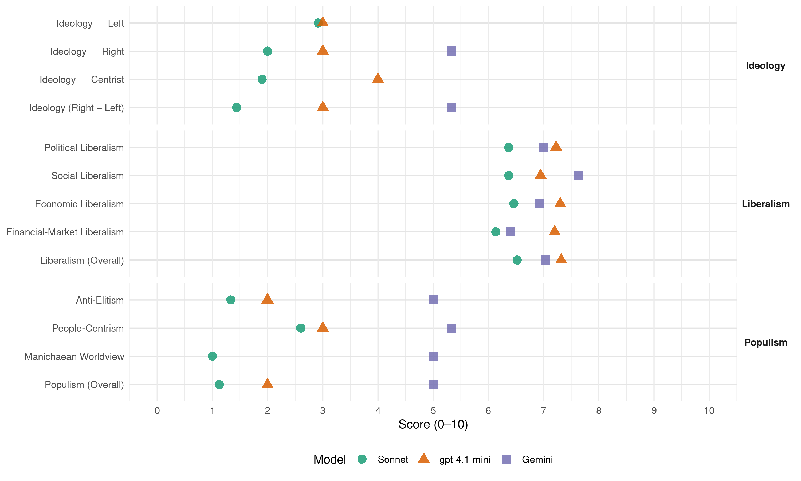

VMRO-DPMNE (North Macedonia, 2016)
manifesto_id 89710_201612
Get full text: This site shows derived annotations and short verbatim quotes only. The full manifesto text is © Manifesto Project / WZB — obtain it via manifesto-project.wzb.eu using the manifesto_id above.
Headline scores
| Dimension | Sonnet | gpt-4.1-mini | Gemini |
|---|---|---|---|
| Populism (Overall) | 1.1 | 2.0 | 5.0 |
| Anti-Elitism | 1.3 | 2.0 | 5.0 |
| People-Centrism | 2.6 | 3.0 | 5.3 |
| Manichaean Worldview | 1.0 | – | 5.0 |
| Ideology (Right − Left) | 1.4 | 3.0 | 5.3 |
| Liberalism (Overall) | 6.5 | 7.3 | 7.0 |
| Political Liberalism | 6.4 | 7.2 | 7.0 |
| Social Liberalism | 6.4 | 6.9 | 7.6 |
| Economic Liberalism | 6.5 | 7.3 | 6.9 |
| Financial-Market Liberalism | 6.1 | 7.2 | 6.4 |
Evidence per dimension
Economic Liberalism
Gemini · score 8.0 · verified · chunk 1
“политиката на ниски даноци”
поддршката на домашните и странските претпријатија преку политиката на ниски даноци и трошоци
Gemini · score 9.0 · verified · chunk 2
“намалување на административните процедури”
начин за пристап кон сите електронски системи на Царинската управа; 2/намалување на административните процедури, односно поефикасно издавање на одобренија за пристап кон системите
Gemini · score 8.0 · verified · chunk 3
“привлекување на странски инвеститори”
претставува важен инструмент за привлекување на странски инвеститори. Во таа насока
Gemini · score 7.0 · verified · chunk 4
“моделите на приватизација, закуп и/ или јавно-приватно партнерство”
спортските аеродроми и леталишта со моделите на приватизација, закуп и/ или јавно-приватно партнерство. Овој проект ќе биде финансиран
Gemini · score 7.0 · verified · chunk 5
“изградат уште шест катни гаражи од приватни инвеститори”
ИЗГРАДБА НА КАТНИ ГАРАЖИ Во следниот период се очекува да се изградат уште шест катни гаражи од приватни инвеститори со вкупно 1.798
Gemini · score 8.0 · verified · chunk 6
“поттикнување на конкуренцијата на енергетските пазари”
основните цели во енергетиката е поттикнување на конкуренцијата на енергетските пазари со почитување на начелата
Gemini · score 7.0 · verified · chunk 7
“зголемување на конкурентноста на македонското производство”
Со гасификацијата овозможуваме диверзификација на енергенсите, зголемување на конкурентноста на македонското производство, а во исто време
Gemini · score 6.0 · verified · chunk 8
“да се поттикне приватната претприемачка иницијатива”
да се збогати туристичката понуда, да се даде поддршка на локалниот економски развој и да се поттикне приватната претприемачка иницијатива.
Gemini · score 3.0 · verified · chunk 9
“субвенционирана каматна стапка од 4% и 5%”
продолжиме со доделување на поволните кредити со субвенционирана каматна стапка од 4% и 5% на годишно ниво наменети за примарното
Gemini · score 6.0 · verified · chunk 10
“раздвижување на пазарот на земјиште”
Продажбата на земјоделското земјиште во државна сопственост треба да влијае на раздвижување на пазарот на земјиште, зголемување на земјоделските имоти и на зголемување на сигурноста на корисниците на земјиштето за инвестирање во земјоделскиот бизнис.
Gemini · score 7.0 · verified · chunk 11
“приватни домашни и странски инвеститори”
доколку има интерес кај приватните домашни и странски инвеститори за отворање ново пензиско друштво
Gemini · score 7.0 · verified · chunk 12
“поттикнување на приватниот сектор за”
Со цел поттикнување на приватниот сектор за развој и проширување на оваа дејност
Gemini · score 7.0 · verified · chunk 13
“спречување на нелојалната конкуренција”
како и повисоко ниво на спречување на нелојалната конкуренција.
Gemini · score 6.0 · verified · chunk 15
“довербата помеѓу бизнис-заедницата и полицијата”
Заради зајакнување на довербата помеѓу бизнис-заедницата и полицијата, во интерес на зголемување на ефиkасноста
Gemini · score 8.0 · verified · chunk 16
“пазарната економија, кои се заеднички”
независноста на судството и пазарната економија, кои се заеднички македонски и европски вредности
Gemini · score 8.0 · verified · chunk 17
“зголемување на конкуренцијата ќе биде распишана”
Заради дополнително зголемување на конкуренцијата ќе биде распишана и аукција за радиофреквенции
Gemini · score 7.0 · verified · chunk 18
“намали административниот товар за бизнисите”
ефикасноста на инспекциската служба и ефикасноста на ниво на инспектор, согласно Законот за инспекциски надзор. Врз основа на овие податоци ќе може подобро да се планираат инспекциските постапки, да се воведат промени во постојните процеси, да се подобри регулаторната рамка и да се намали административниот товар за бизнисите. Системот ќе обезбеди и алатки
Gemini · score 7.0 · verified · chunk 19
“иницира зголемување на конкурентноста”
развој на нови производи и услуги, што пак, од друга страна иницира зголемување на конкурентноста, креирање на структурни промени
Gemini · score 8.0 · verified · chunk 20
“посилен, попродуктивенипоконкурентенбизнис-сектор”
неопходензапосилен, попродуктивенипоконкурентенбизнис-сектор. Прекустратешкипристапкониновациите
Gemini · score 6.0 · verified · chunk 21
“привлекување странски инвестиции”
поволни услови за привлекување странски инвестиции во областа на здравството
Gemini · score 6.0 · verified · chunk 22
“по пат на јавно приватно партнерство”
инвеститори со кои по пат на јавно приватно партнерство треба да се изгради објект во кој
Gemini · score 7.0 · verified · chunk 23
“ослободување од данокот на добивка”
спортски федерации и МОК, за што ќе добие ослободување од данокот на добивка. Конкретно, на обврзникот кој донирал
Gemini · score 7.0 · verified · chunk 24
“ослободување од данок на добивка на компаниите”
рок: 2017-2020 година 26. Проект: ограничено ослободување од данок на добивка на компаниите кои ќе финасираат спортски клубови
Gemini · score 7.0 · verified · chunk 25
“поддршка на приватниот сектор”
Проектот ќе продолжи поддршката за воспоставените единици за поддршка на приватниот сектор (бизис-центри) во рамките на Центрите
Gemini · score 6.0 · verified · chunk 26
“ја зголеми конкуренцијата на пазарот”
услови за потрошувачите и ќе ја зголеми конкуренцијата на пазарот. Проектот ќе се започне
gpt-4.1-mini · score 8.0 · verified · chunk 1
“политиката на ниски даноци и трошоци за фирмите”
…ќе продолжиме со поддршката на домашните и странските претпријатија преку политиката на ниски даноци и трошоци за фирмите, изградбата на нови технолошко-индустриски развојни зони, поддршка на малите и средни фирми преку обезбе- дување на полесен пристап до финансиски средства…
gpt-4.1-mini · score 8.0 · verified · chunk 2
“подобрување на бизнис-климата во Македонија”
Во наредниот четиригодишен период ќе се реализираат многу нови мерки, како и активности кои се веќе започнати, а во насока на натамошно подобрување на бизнис-климата во Македонија согласно со најдобрите светски практики и препораките од извештајот „Doing Business“ на Светската банка, меѓу кои се:
gpt-4.1-mini · score 9.0 · verified · chunk 3
“странски директни инвестиции”
…се очекува да продолжи натамошниот пораст на странските директни инвестиции во Република Македонија, како во технолошките индустриски развојни зони (ТИРЗ), така и во индустриските зони во општините. Успешните политики во изминатиот период придонесоа да се реализираат повеќе странски инвестиции од различни земји и сектори, и директно да се вработат над 18.000 лица.
gpt-4.1-mini · score 7.0 · verified · chunk 6
“поттикнување на конкуренцијата на енергетските пазари”
…Една од основните цели во енергетиката е поттикнување на конкуренцијата на енергетските пазари со почитување на начелата на недискриминација, објективност и транспарентност, како и интегрирање на енергетскиот пазар на Република Македонија во регионалните и меѓународните енергетски пазари…
gpt-4.1-mini · score 8.0 · verified · chunk 7
“зголемување на конкурентноста на македонското производство”
… Со гасификацијата овозможуваме диверзификација на енергенсите, зголемување на конкурентноста на македонското производство, а во исто време и заштита на животната средина …
gpt-4.1-mini · score 8.0 · verified · chunk 9
“поволни кредити со субвенционирана каматна стапка”
ќе продолжиме со доделување на поволните кредити со субвенционирана каматна стапка од 4% и 5% на годишно ниво наменети за примарното земјоделско производство, преработувачката индустрија и откупот на земјоделски производи
gpt-4.1-mini · score 6.0 · verified · chunk 10
“поволни услови за компаниите од дрвната индустрија за реализација на нови инвестиции”
…преку постојните кредитни линии ќе се обезбедат поволни услови за компаниите од дрвната индустрија за реализација на нови инвестиции за зголемување на извозот. Р О К : К О Н Т И Н У И Р А Н О В О П Е Р И О Д О Т 2 0 1 8 - 2 0 2 0 Г О Д И Н А…
gpt-4.1-mini · score 6.0 · verified · chunk 11
“продажба на градежното земјиште со почетна цена од 1 евро за м2”
Исто така, продадени се 3 локации (во Општина Аеродром, во Општина Илинден и во Општина Охрид) и два објекта со намена за изградба на Дом за стари лица (во Општина Пехчево и во Општина Петровец-Катланово). Во наредниот период проектот ќе продолжи да се реализира и за сите заинтересирани инвеститори ќе се обезбедат овие поволности со цел за изградба на нови приватни домови за стари лица.
gpt-4.1-mini · score 7.0 · verified · chunk 12
“поддршка на растот на микро и мали претпријатија”
Во планот се опфатени услугите и активните програми и мерки за вработување кои имаат за цел намалување на невработеноста како што се: програмата за самовработување, програмата за поддршка на растот на микро и мали претпријатија за создавање на нови работни места, обука со субвенционирано вработување, практиканство, обука за напредни ИТ-вештини и други.
gpt-4.1-mini · score 7.0 · verified · chunk 13
“Се воведува вонсудската наплата на долгови за комунални услуги врз основа на веродостојна исправа”
Од 1 јануари 2017 година се воведува вонсудската наплата на долгови за комунални услуги врз основа на веродостојна исправа, со што на доверителите им се овозможува, користејќи го ефикасниот систем на извршителите, да им ги предочат обврските на должниците, како и правните последици од нивното ненавремено намирување, што ќе се презема исклучиво по барање и на трошок на доверителот, без да се создаваат нови дополнителни трошоци за должниците.
gpt-4.1-mini · score 8.0 · verified · chunk 16
“привлекување на странски инвестиции во земјата, зголемување на извозот, како и промоција на македонските економски интереси во странство”
…привлекување на странски инвестиции во земјата, зголемување на извозот, како и промоција на македонските економски интереси во странство; проширување на визната либерализација…
gpt-4.1-mini · score 8.0 · verified · chunk 17
“ќе се имплементира регулаторна рамка со која постојните мрежни оператори ќе бидат обврзани да понудат поврзување на виртуелни оператори”
…ќе бидат обезбедени најмалку 30% пониски големопродажни цени во однос на малопродажните цени. Идните виртуелни оператори нема да можат да бидат капитално, управувачки и роднински поврзани со постојните мрежни оператори…
gpt-4.1-mini · score 8.0 · verified · chunk 18
“поддршка на домашната бизнис-заедница”
Во услови кога државата води интензивна политика за отворање нови работни места, за зголемување на вработеноста преку привлекување на странски директни инвестиции, но и преку поддршка на домашната бизнис-заедница, истовремено мора и соодветно да одговори на позитивните ефекти кои ги иницира истата, односно да одговори на настанатата потреба на пазарот на трудот за одреден кадар.
gpt-4.1-mini · score 7.0 · verified · chunk 19
“пазар, конкуренција, приватизација, даноци, трговија”
…поддршка на пазарот, конкуренцијата, приватизацијата и даночната политика…
gpt-4.1-mini · score 8.0 · verified · chunk 20
“пазар, конкуренција, бизнис, приватизација, даноци, трговија”
…поддршка на пазар, конкуренција, бизнис, приватизација, даноци и трговија…
gpt-4.1-mini · score 7.0 · verified · chunk 21
“здравствени зони ќе се обезбедат поволни услови за привлекување странски инвестиции”
Со формирањето на слободни здравствени зони ќе се обезбедат поволни услови за привлекување странски инвестиции во областа на здравството и привлекување најсовремена здравствена технологија, како и поттикнување на здравствениот туризам, при што овие најсовремени здравствени установи во одреден обем ќе бидат достапни и за нашите пациенти.
gpt-4.1-mini · score 5.0 · verified · chunk 22
“поттикнување на културниот туризам во функција на општиот економски и општествен развој”
За периодот 2017-2020 година нашите цели се:заштита, промоција и развој на културното наследство; унапредување на културата на припадниците на сите етнички заедници кои живеат во Република Македонија; доекипирање на институциите од областа на културата и заштитата на културното наследство со стручен и професионален кадар; подобрување на постојната и изградба на нова инфраструктура за остварување на културата; стимулирање на независната културна сцена; рамномерен локален културен развој; координирана борба против недозволената трговија со културни добра; поддршка на лица со посебни потреби преку поддршка на проекти од областа на културата; интензивна промоција на македонското творештво и македонската култура во светот; поттикнување на културниот туризам во функција на општиот економски и општествен развој на државата; создавање оптимални услови за развој и манифестација на креативноста и вештините во областа на културата и активна партиципација и дејствување во меѓународните асоцијации, фондови и фондации за користење техничка, финансиска и стручна помош.
gpt-4.1-mini · score 7.0 · verified · chunk 24
“финансиска поддршка (преку долгорочни кредити и сл.)”
ќе настојуваме да се зголемат трансферите од даночни приходи од централниот буџет во буџетите на единиците на локалната самоуправа, со цел да овозможиме подобрување на финансиската состојба на општините, а со тоа и на квалитетот на услугите кои се испорачуваат на граѓаните; ќе настојуваме, согласно финансиските можности во буџетот, да се зголемат трансферите од ЈП Патишта кон општините за реконструкција и одржување на локални улици и патишта, како и блок-дотациите.
gpt-4.1-mini · score 7.0 · verified · chunk 25
“поддршка на кластерското здружување и организирање на информанивни и советодавни настани на барање на приватниот сектор, пред сè на МСП како двигатели на локалниот и регионалниот економски развој”
Со Проектот ќе продолжи поддршката за воспоставените единици за поддршка на приватниот сектор (бизис-центри) во рамките на Центрите за развој на планските региони. Со активностите ќе се овозможи натамошно унапредување на координативната улога на Центрите во насока на јакнење на врските меѓу различните национални и локални институции: АВРМ, мрежата на АППРМ, општини и ЛЕР канцеларии, комори, бизнис-здруженија, кластери, акцелератори/ инкубатори. Ќе продолжи одржувањето на интерактивните веб-портали за инвестирање во општините од планските региони, вклучително и ажурирање на податоците во водичите за инвестиции и во регионалните бази на податоци за достапните гринфилд („greenfield“) и браунфилд („brownfield“) локации. Со Проектот се предвидува финансирање на активности од подготвените програми за развој и поддршка на бизнис-секторот во сите осум плански региони, пред сè за стимулирање на трансфер на знаења и вештини од меѓународни компании и експерти на МСП, поддршка на кластерското здружување и организирање на информанивни и советодавни настани на барање на приватниот сектор, пред сè на МСП како двигатели на локалниот и регионалниот економски развој.
gpt-4.1-mini · score 7.0 · verified · chunk 26
“обезбедено кофинансирање од Буџетот на РМ”
Буџет: 6,7 милиони евра (ЕУ/ ИПА програма и обезбедено кофинансирање од Буџетот на РМ) РО К: Н О Е М В Р И 2018 Г О Д И Н А
Sonnet · score 8.0 · verified · chunk 1
“политиката на ниски даноци и трошоци за фирмите”
ќе продолжиме со поддршката на домашните и странските претпријатија преку политиката на ниски даноци и трошоци за фирмите, изградбата на нови технолошко-индустриски развојни зони
Sonnet · score 8.0 · verified · chunk 2
“либерализација на пазарот за платежни услуги”
Со Законот ќе се изврши и либерализација на пазарот за платежни услуги преку влез на платежни институции кои не се банки
Sonnet · score 8.0 · verified · chunk 3
“привлекување на странски инвеститори”
склучувањето на договори за поттикнување и заемна заштита на инвестициите… важен инструмент за привлекување на странски инвеститори
Sonnet · score 6.0 · verified · chunk 4
“приватни инвеститори се изградија три катни гаражи”
Претходно во соработка со приватни инвеститори се изградија три катни гаражи во Скопје со вкупно 604 паркинг-места
Sonnet · score 6.0 · verified · chunk 5
“нови инвестиции и отворање на нови работни места”
Исто така ова е основа за нови инвестиции и отворање на нови работни места. Се предвидува реализација на нови локации
Sonnet · score 7.0 · verified · chunk 6
“либерализација на пазарот на енергија”
остануваме на определбата за понатамошна либерализација на пазарот на енергија кон остварување на сигурно и стабилно функционирање на пазарот на енергија
Sonnet · score 7.0 · verified · chunk 7
“зголемување на конкурентноста на македонското производство”
Со гасификацијата овозможуваме диверзификација на енергенсите, зголемување на конкурентноста на македонското производство, а во исто време и заштита на животната средина
Sonnet · score 5.0 · verified · chunk 8
“поттикнеме формирање на поголем број нови агенции”
ќе поттикнеме формирање на поголем број нови агенции и специјализирање на постојните за продажба на туристички производи кои ги нуди Македонија
Sonnet · score 6.0 · verified · chunk 9
“даночни ослободувања за период од 5 години”
ќе им се понудат поволни услови за инвестирање и поддршка обезбедена од страна на државата кои се слични на оние што се даваат на инвеститорите во технолошко-индустриските развојни зони, односно даночни ослободувања за период од 5 години
Sonnet · score 6.0 · verified · chunk 10
“раздвижување на пазарот на земјиште”
Продажбата на земјоделското земјиште во државна сопственост треба да влијае на раздвижување на пазарот на земјиште, зголемување на земјоделските имоти
Sonnet · score 6.0 · verified · chunk 11
“зголемување на конкуренцијата”
Со влегување на ново друштво на пазарот на капитално финансираното пензиско осигурување ќе се зголеми конкуренцијата во овој дел на пазарот
Sonnet · score 6.0 · verified · chunk 12
“поволна клима за инвестиции”
Тој процес бара одржлива макроекономска политика, поволна клима за инвестиции, силен човечки капитал
Sonnet · score 6.0 · verified · chunk 13
“флексибилно ангажирање на работници за сезонска работа”
ќе овозможиме флексибилно ангажирање на работници за сезонска работа. Флексибилното ангажирање на сезонските работници всушност претставува олеснување и забрзување на процедурата
Sonnet · score 6.0 · verified · chunk 14
“нелојалната конкуренција и создавање на амбиент”
со цел елиминирање на нелојалната конкуренција и создавање на амбиент за еднакви можности за сите правни субјекти
Sonnet · score 6.0 · verified · chunk 15
“зајакнување на довербата помеѓу бизнис-заедницата и полицијата”
Заради зајакнување на довербата помеѓу бизнис-заедницата и полицијата, во интерес на зголемување на ефикасноста на откривање на сторители
Sonnet · score 7.0 · verified · chunk 16
“пазарната економија, кои се заеднички македонски”
Цврсто стоиме на заложбите за владеење на правото, независноста на судството и пазарната економија, кои се заеднички македонски и европски вредности
Sonnet · score 7.0 · verified · chunk 17
“зголемена пазарна конкуренција, зголемен квалитет”
Овие мерки ќе резултираат со зголемена пазарна конкуренција, зголемен квалитет и понатамошно намалување на цените на мобилната телефонија
Sonnet · score 6.0 · verified · chunk 18
“зголемување на конкурентноста, креирање на структурни промени”
иницира зголемување на конкурентноста, креирање на структурни промени и создавање нови работни места.
Sonnet · score 6.0 · verified · chunk 19
“зголемување на конкурентноста”
иницира зголемување на конкурентноста, креирање на структурни промени и создавање нови работни места
Sonnet · score 7.0 · verified · chunk 20
“поголема конкурентност и профитабилност”
ќе придонесе кон зголемување на нивната конкурентност, поголема продажба, профитабилност и раст, и последователно креирање на работни места
Sonnet · score 7.0 · verified · chunk 21
“привлекување странски инвестиции во областа на здравството”
Со формирањето на слободни здравствени зони ќе се обезбедат поволни услови за привлекување странски инвестиции во областа на здравството и привлекување најсовремена здравствена технологија.
Sonnet · score 6.0 · verified · chunk 22
“по пат на јавно приватно партнерство”
Започната е постапка за изнаоѓање инвеститори со кои по пат на јавно приватно партнерство треба да се изгради објект во кој ќе биде сместен Театарот Комедија
Sonnet · score 6.0 · verified · chunk 23
“ослободување од данокот на добивка”
на секоја компанија да финасира во спортски клубови, спортисти, спортски федерации и МОК, за што ќе добие ослободување од данокот на добивка
Sonnet · score 6.0 · verified · chunk 24
“ослободување од данокот на добивка”
на секоја компанија да финасира во спортски клубови, спортисти, спортски федерации и МОК, за што ќе добие ослободување од данокот на добивка
Sonnet · score 7.0 · verified · chunk 25
“поддршката за воспоставените единици за поддршка на приватниот сектор”
ќе продолжи поддршката за воспоставените единици за поддршка на приватниот сектор (бизис-центри) во рамките на Центрите за развој на планските региони
Sonnet · score 6.0 · verified · chunk 26
“ќе ја зголеми конкуренцијата на пазарот”
производство на пелети, кое ќе биде под поволни услови за потрошувачите и ќе ја зголеми конкуренцијата на пазарот. Проектот ќе се започне
Financial-Market Liberalism
Gemini · score 7.0 · verified · chunk 1
“привлекување на реномирани меѓународни финансиски институции”
Меѓународен центар за финансиски услуги Со цел привлекување на реномирани меѓународни финансиски институции и фондови
Gemini · score 9.0 · verified · chunk 2
“либерализација на пазарот за платежни услуги”
Единствената област за плаќања (SEPA - Single European Payment Area). Со Законот ќе се изврши и либерализација на пазарот за платежни услуги преку влез на платежни институции кои не се банки
Gemini · score 7.0 · verified · chunk 3
“платформи за интернационални банкарски групации”
развој на деловни софтверски платформи за интернационални банкарски групации. Согласно со плановите
Gemini · score 5.0 · verified · chunk 8
“кредитите обезбедени преку Македонската банка за поддршка”
Инвестициите за земјоделците и преработувачките капацитети беа и ќе бидат поддржани со субвенционираните поволни кредити обезбедени преку Македонската банка за поддршка на развојот.
Gemini · score 2.0 · verified · chunk 9
“кредити со субвенционирана каматна стапка”
продолжиме со доделување на поволните кредити со субвенционирана каматна стапка од 4% и 5% на годишно ниво
Gemini · score 5.0 · verified · chunk 10
“кредитни линии ќе се обезбедат поволни услови”
Дополнително, преку постојните кредитни линии ќе се обезбедат поволни услови за компаниите од дрвната индустрија за реализација на нови инвестиции за зголемување на извозот.
Gemini · score 8.0 · verified · chunk 11
“пазарот на капитално финансираното пензиско”
со влегување на ново друштво на пазарот на капитално финансираното пензиско осигурување ќе се зголеми конкуренцијата
Gemini · score 6.0 · verified · chunk 12
“програма за самовработување со кредитирање”
120. ПРОЕКТ: ПРОГРАМА ЗА САМОВРАБОТУВАЊЕ СО КРЕДИТИРАЊЕ Заинтересираните невработени лица што сакаат
Gemini · score 7.0 · verified · chunk 19
“концептот штедење/ трошење, банки и претприемништво”
животни вештини. Работилниците се поделени во неколку групи и се однесуваат на концептот штедење/ трошење, банки и претприемништво. Носител: Министерство за образование
Gemini · score 8.0 · verified · chunk 20
“поттикнеразвојотнапазаротнакапитал”
задасепоттикнеразвојотнапазаротнакапитал иприватнитеинвестициикоисенеопходнизанепреченраст
gpt-4.1-mini · score 7.0 · verified · chunk 1
“финансиски услуги и подобрување на ефикасноста на супервизијата”
…Ќе се зајакне регулативата која ги уредува регистрацијата на компаниите, едношалтерскиот систем, финансиските услуги и подобрување на ефикасноста на супервизијата, трговските друштва и работните односи…
gpt-4.1-mini · score 8.0 · verified · chunk 2
“нов Закон за пазарот на капитал”
Ќе подготвиме целосно нова регулатива за пазарот на капитал. Постојниот Закон за хартии од вредност ќе биде заменет со два нови закони: Закон за пазарот на хартии од вредност и Закон за понуда и издавање на хартии од вредност.
gpt-4.1-mini · score 7.0 · verified · chunk 9
“банкарски гаранции за земјоделството и руралниот развој”
Системот на банкарски гаранции за земјоделството и руралниот развој кој е воспоставен во соработка со Агенцијата за меѓународен развој на САД (УСАИД), ќе овозможи гаранција за хипотеката на кредитот во висина до 50% од износот, за кредити до 500.000 долари.
gpt-4.1-mini · score 7.0 · verified · chunk 11
“зголемување на конкуренцијата и подобрување на условите и поволностите за граѓаните”
Со цел зголемување на конкуренцијата и подобрување на условите и поволностите за граѓаните ќе спроведеме активности за да се отвори пазарот за влегување на нови правни субјекти – меѓународни компании кои ќе менаџираат со средствата на осигурениците по основ на уплатен придонес со закон да можат да основаат друштво кое ќе управува со пензиски фонд.
gpt-4.1-mini · score 7.0 · verified · chunk 20
“финансии, банкарство, капитал, кредит, инвестирање, пазар”
…регулација на финансии, банкарство, капитал, кредит и инвестирање на пазарот…
Sonnet · score 7.0 · verified · chunk 1
“враќањето на довербата на светските финансиски пазари”
Со зголемениот раст на светската економија, враќањето на довербата на светските финансиски пазари, високата доверба кај странските инвеститори врз основа на одличната бизнис-клима
Sonnet · score 8.0 · verified · chunk 2
“нови пазарни сегменти и нови финансиски инструменти”
Ќе се овозможи воспоставување на нови пазарни сегменти и нови финансиски инструменти. Во таа смисла, брокерските куќи ќе имаат можност да организираат сопствени пазарни сегменти
Sonnet · score 7.0 · verified · chunk 3
“договори за одбегнување на двојното оданочување”
клучен приоритет претставува проширувањето на мрежата на склучени билатерални договори за одбегнување на двојното оданочување
Sonnet · score 6.0 · verified · chunk 4
“средства од меѓународни финансиски институции”
Средствата ќе се обезбедат под поволни услови од меѓународни финансиски институции. Буџет: 22,5 милиони евра
Sonnet · score 6.0 · verified · chunk 5
“транспарентност и стимулирање на навиките”
да се создаде транспарентност и стимулирање на навиките на граѓаните и бизнис-заедницата да се осигурува недвижниот имот
Sonnet · score 7.0 · verified · chunk 6
“финансиска поддршка од меѓународни финансиски институции”
ќе ги разгледаме можностите за добивање грантови од фондовите и барања за поддршка од меѓународни финансиски институции за реализација на десулфуризацијата
Sonnet · score 5.0 · verified · chunk 8
“поволните кредити со субвенционирана каматна стапка”
ќе продолжиме со доделување на поволните кредити со субвенционирана каматна стапка од 4% и 5% на годишно ниво наменети за примарното земјоделско производство
Sonnet · score 5.0 · verified · chunk 9
“поволните кредити со субвенционирана каматна стапка”
ќе продолжиме со доделување на поволните кредити со субвенционирана каматна стапка од 4% и 5% на годишно ниво наменети за примарното земјоделско производство
Sonnet · score 6.0 · verified · chunk 10
“преку постојните кредитни линии ќе се обезбедат”
Дополнително, преку постојните кредитни линии ќе се обезбедат поволни услови за компаниите од дрвната индустрија за реализација на нови инвестиции
Sonnet · score 7.0 · verified · chunk 11
“отвори пазарот за влегување на нови правни субјекти”
ќе спроведеме активности за да се отвори пазарот за влегување на нови правни субјекти – меѓународни компании кои ќе менаџираат со средствата на осигурениците
Sonnet · score 5.0 · verified · chunk 12
“обврска за банките во Република Македонија”
Со закон ќе создадеме обврска за банките во Република Македонија да постават однапред одреден број банкомати прилагодени за потребите на лицата со инвалидност
Sonnet · score 6.0 · verified · chunk 16
“привлекување на странски инвестиции во земјата”
привлекување на странски инвестиции во земјата, зголемување на извозот, како и промоција на македонските економски интереси во странство
Sonnet · score 5.0 · verified · chunk 19
“банки и претприемништво”
Работилниците се поделени во неколку групи и се однесуваат на концептот штедење/трошење, банки и претприемништво
Sonnet · score 7.0 · verified · chunk 20
“развојот на пазарот на капитал”
ВМРО-ДПМНЕ ќе спроведе сет мерки за да се поттикне развојот на пазарот на капитал и приватните инвестиции кои се неопходни за непречен раст на стартап претпријатијата
Sonnet · score 5.0 · verified · chunk 24
“приредувачите на игри на среќа во обложувалници”
приредувачите на игри на среќа во обложувалници, на месечна основа, за финансирање на спортот ќе издвојуваат 3% од разликата меѓу уплатениот и исплатениот износ
Political Liberalism
Gemini · score 7.0 · verified · chunk 1
“ефикасно спроведување на правото”
борба против корупцијата и криминалот и ефикасно спроведување на правото; Одржување на
Gemini · score 7.0 · verified · chunk 2
“пристап до судовите”
АКМИС) ОД СТРАНА НА АДВОКАТИТЕ Со оваа мерка ќе се овозможи адвокатите да имаат можност да го користат системот АКМИС во следните случаи: 1/ п ристап до сите закони, прописи и регулативи, 2/ пристап до судовите, 3/да добиваат известувања
Gemini · score 5.0 · verified · chunk 7
“заштита на јавниот интерес”
економски развој на Македонија, но и заштита на јавниот интерес, заштитата на природните
Gemini · score 5.0 · verified · chunk 10
“Владaта на ВМРО-ДПМНЕ во изминатите десет години”
ИНДУСТРИЈАТА ЗА МЕБЕЛ – ВОВЕДУВАЊЕ КАТАСТАР ЗА ШУМИ За јакнење на конкурентноста за индустријата за мебел и дрвната индустрија ќе се реализираат активности за подобрување на регулаторната и институционална рамка поврзана со работењето на овој сектор. Во таа насока предвидено е воспоставување на катастар за шуми, поддршка за промоција на извозот на мебел во регионот и ЕУ, како и пристап до финансии. Ќе се воведе катастар за шуми со што ќе се поддржи пласманот на македонски производи од дрво од домашно потекло на пазарите во ЕУ. Надлежни институции: Министерството за земјоделство, шумарство и водостопанство, Шумарскиот факултет и Институтот за шумарство. Промоција на извозот на мебел и производи од дрво. Преку Агенцијата за странски инвестиции и промоција на извозот ќе се зајакне промоцијата на мебел и производи од дрво од домашно потекло во странство со цел поголем пласман и зголемен извоз, преку настап на саеми, Б2Б средби и контакти, како и претставување на домашните компании од дрвната и индустријата за мебел од страна на економските промотори. Надлежна институција: Агенцијата за странски инвестиции и промоција на извозот на Република Македонија. Дополнително, преку постојните кредитни линии ќе се обезбедат поволни услови за компаниите од дрвната индустрија за реализација на нови инвестиции за зголемување на извозот. Р О К : К О Н Т И Н У И Р А Н О В О П Е Р И О Д О Т 2 0 1 8 - 2 0 2 0 Г О Д И Н А ЗEMJА HА EДHАKBИ MOЖHOCTИ И ШАHCИ ЗА CИTE Владaта на ВМРО-ДПМНЕ во изминатите десет години водеше грижа и спроведуваше проекти за сите категории граѓани кои имаат потреба од поддршка од државата со цел олеснување на нивниот живот и подигање на стандардот. Еднакво се посветивме на пензионерите, невработените, лицата во социјален ризик, самохраните родители како и за децата без родители и родителска грижа. Македонија е држава која се стреми кон социјална правда и токму поради тоа во повеќе мерки и заложби се ориентиравме кон повисок степен на социјална заштита како еден од предусловите за побрз економски раст.
Gemini · score 8.0 · verified · chunk 11
“остварувањето на своето избирачко право”
овозможи еднаков пристап на слепите лица во остварувањето на своето избирачко право, а истовремено ќе се исклучат
Gemini · score 7.0 · verified · chunk 12
“остварувањето на своето избирачко право”
во остварувањето на своето избирачко право, а истовремено ќе се исклучат сите
Gemini · score 8.0 · verified · chunk 13
“независен судски систем”
3. ТРАНСПАРЕНТЕН, ЕФИКАСЕН И НЕЗАВИСЕН СУДСКИ СИСТЕМ Заради целосно исполнување
Gemini · score 8.0 · verified · chunk 14
“директно до Уставниот суд на РМ”
слободите, да поднесе тужба директно до Уставниот суд на РМ и да побара соодветна заштита.
Gemini · score 7.0 · verified · chunk 15
“обезбедување на правата и слободите”
справување со Криминалците, а со тоа обезбедување на правата и слободите на нашите граѓани насекаде низ светот.
Gemini · score 8.0 · verified · chunk 16
“владеење на правото, независноста на судството”
Цврсто стоиме на заложбите за владеење на правото, независноста на судството и пазарната економија
Gemini · score 8.0 · verified · chunk 17
“развој на демократијата, граѓанското општество”
реализација на проекти од областа на развој на демократијата, граѓанското општество и човековите права
Gemini · score 7.0 · verified · chunk 18
“развојот на демократијата и социјалната правда”
економски и политички развој, како и предуслов за развојот на демократијата и социјалната правда. Како земја можеме да напредуваме
Gemini · score 6.0 · verified · chunk 21
“заштита на нивните права”
посебен закон за лекарите, особено во делот на заштита на нивните права и целокупна заштита
Gemini · score 7.0 · verified · chunk 22
“согласно новиот Закон за општа управна постапка”
Фондот за здравствено осигурување согласно новиот Закон за општа управна постапка ќе овозможи електронска услуга за остварување
Gemini · score 7.0 · verified · chunk 24
“партиципативно и транспарентно локално владеење”
Проектот 20172018 година 14. Проект: партиципативно и транспарентно локално владеење Главната цел на Проектот е поттикнување
Gemini · score 7.0 · verified · chunk 25
“ПАРТИЦИПАТИВНО И ТРАНСПАРЕНТНО ЛОКАЛНО ВЛАДЕЕЊЕ”
РОК: 20172018 ГОДИНА 14. ПРОЕКТ: ПАРТИЦИПАТИВНО И ТРАНСПАРЕНТНО ЛОКАЛНО ВЛАДЕЕЊЕ Главната цел на Проектот е поттикнување
gpt-4.1-mini · score 8.0 · verified · chunk 1
“ефикасно спроведување на правото”
…Бескомпромисна борба против корупцијата и криминалот и ефикасно спроведување на правото; Одржување на добри меѓуетнички односи врз принципите на меѓусебна толеранција и почитување и подеднаков третман на сите пред законот…
gpt-4.1-mini · score 7.0 · verified · chunk 2
“Системот за управување со содржини преку веб”
Системот за управување со содржини преку веб (web content management system) систем значи воспоставување на еден централен веб-портал www.sud.mk, преку кој на едноставен начин ќе може да се пристапи до веб-порталите на 33 судови во Република Македонија, порталот на Врховниот суд и порталот на Судскиот совет.
gpt-4.1-mini · score 7.0 · verified · chunk 3
“демократија”
…ќе продолжи емитувањето на „Македонски авантури“на интернационалниот медиум Еуронјус (Euronews). Изработени се 5 репортажи од по минута и пол, кои се фокусирани на најспектакуларни предели во Македонија и возбудливите активности кои може да се доживеат доколку се посетат. Секој извештај е објавен на нивната веб страница во специјално посветен дел на „Македонски авантури“. На медиумите Еуроспорт (Eurosport) и Тревел чејнел (Travel Channel) ќе се емитуваат спотовите од кампањата Македонија Вечна. За промоција на Македонија како инвестициска дестинација, ќе се продолжи со кампања во печатени медиуми, таргетирана за автомобилската индустрија. Инвестициските поволности што се нудат во Македонија ќе се презентираат во реномираните автомобилски списанија:Automobilwoche, Automotive News, Automotive News Europe и Automobil Produktion.
gpt-4.1-mini · score 7.0 · verified · chunk 6
“поттикнување на конкуренцијата на енергетските пазари”
…на енергетиката со законодавството опфатено со Договорот за основање на енергетската заедница. Една од основните цели во енергетиката е поттикнување на конкуренцијата на енергетските пазари со почитување на начелата на недискриминација, објективност и транспарентност, како и интегрирање на енергетскиот пазар на Република Македонија во регионалните и меѓународните енергетски пазари…
gpt-4.1-mini · score 6.0 · verified · chunk 7
“донесена е регулатива за формирање и развој на туристички развојни зони”
… во изминатиот период, донесена е регулатива за формирање и развој на туристички развојни зони и утврдени се локации за 9 туристички развојни зони и тоа: …
gpt-4.1-mini · score 7.0 · verified · chunk 9
“редовно да бидат информирани за доставените решенија”
земјоделците писмено ќе бидат информирани за доставените решенија и преку соодветна кампања за можноста за приговор во рок од 15 дена по добивање решението за одбивање на барањето, а пред започнување на постапка пред управен суд.
gpt-4.1-mini · score 7.0 · verified · chunk 10
“реализиравме бесплатно здравствено осигурување за лица без никаков приход”
…вработување на лица во јавната администрација од социјално загрозени семејства (долгорочно невработени, лица до многудетни семејства, лица од самохрани и еднородителски семејства и лица од семејства без ниту еден вработен). Настојувавме да го подобруваме статусот на инвалидните лица со воведување на нови парични права како додатокот за слепило од 7.000 денари наменето за потполно слепите лица, паричен додаток на глувите лица од 4.000 денари како и додатокот за мобилност за лица со 100% телесен инвалидитет и лица со квадриплегија во износ од 7.000 денари. За 50% го зголемивме износот на посебниот додаток за самохран родител на дете со пречки во развојот, за 25% го зголемивме посебниот додаток за материјално необезбедени родители на деца со пречки во развојот. Во останатите мерки кои ги реализиравме со кои се дава шанса на различни категории граѓани спаѓаат: програмата Д-10 за вработување на лица кои до 18-годишна возраст имале статус на деца без родители и без родителска грижа, зголемување за 25% на паричниот надоместок за згрижување на деца без родители и родителска грижа, финансиска поддршка за ученици во средното образование од домаќинства приматели на социјална помош кои редовно посетуваат настава, обезбедивме бесплатно здравствено осигурување за лица без никаков приход, континуирано намалување на цените на лековите…
gpt-4.1-mini · score 7.0 · verified · chunk 11
“ВМРО-ДПМНЕ се залага за отвореност на институциите кон граѓаните”
ПОДОБРУВАЊЕ НА КВАЛИТЕТОТ НА УСЛУГИТЕ НА ФОНДОТ НА ПЕНЗИСКОТО И ИНВАЛИДСКОТО ОСИГУРУВАЊЕ НА МАКЕДОНИЈА ВМРО-ДПМНЕ се залага за отвореност на институциите кон граѓаните и достапност за нивните потреби. Во тој правец ќе продолжиме со запознавање на граѓаните со своите права од пензиското и инвалидско осигурување,
gpt-4.1-mini · score 7.0 · verified · chunk 12
“човековите права се императив и постојан мотив”
За ВМРО-ДПМНЕ човековите права се императив и постојан мотив за нивно ефикасно унапредување. Со осмислени иницијативи и мултиресорска соработка на државните институции ќе работиме на превенција и справување на ризик-факторите по човековите права согласно со домашните закони и меѓународното право.
gpt-4.1-mini · score 8.0 · verified · chunk 13
“Професионалноста, одговорноста, непристрасноста и ефикасноста на правосудниот систем”
Продолжуваме понатаму со преземање на реформските активности во правосудниот систем, со цел комплетно исполнување на критериумите за членство на Република Македонија во евроатлантските структури. Професионалноста, одговорноста, непристрасноста и ефикасноста на правосудниот систем и натаму ќе бидат на врвот на приоритетите на нашето дејствување. Ќе продолжиме со развојот на информатичките технологии во правосудниот систем со цел олеснување на пристапот до правдата и зголемување на неговата транспарентност и јавност.
gpt-4.1-mini · score 9.0 · verified · chunk 14
“правото загарантирано со Уставот на РМ и со Конвенцијата за заштита на правата и слободите”
ки на Советот. На овој начин ќе се овозможи, секој граѓанин кој смета дека му е повредено правото загарантирано со Уставот на РМ и со Конвенцијата за заштита на правата и слободите, да поднесе тужба директно до Уставниот суд на РМ и да побара соодветна заштита.
gpt-4.1-mini · score 7.0 · verified · chunk 15
“систем на контрола што ќе овозможи транспарентноста и отчетност пред граѓаните”
систем на контрола што ќе ја подобри перцепцијата и довербата на јавноста за работата на полицијата; систем на контрола што ќе овозможи транспарентноста и отчетност пред граѓаните; исто така со Проектот ќе се зајакне и ефикасноста и ефективноста во сузбивањето на криминалните и други несоодветни однесувања во Министерството.
gpt-4.1-mini · score 9.0 · verified · chunk 16
“ВМРО-ДПМНЕ останува фокусирана на спроведување на препораките од Пристапниот дијалог на високо ниво и Итните реформски приоритети”
…ВМРО-ДПМНЕ останува фокусирана на спроведување на препораките од Пристапниот дијалог на високо ниво и Итните реформски приоритети. Продолжувањето на овој проактивен пристап ќе ни овозможи…
gpt-4.1-mini · score 8.0 · verified · chunk 17
“Отворена Влада Третиот Национален акциски план за Отворено владино партнерство 2016-2018 година”
…Ќе се развие платформа преку која граѓаните ќе можат постојано да поднесуваат идеи за работата и програмата на Владата. За секоја внесена идеја, граѓанинот ќе добие одговор од надлежна институција во рок од 14 дена Буџет: 600.000 денари Р О К : Ј У Н И 2 0 1 7 Г О Д И Н А 51. ПРОЕКТ: Отворена Влада Третиот Национален акциски план за Отворено владино партнерство 2016-2018 година вклучува широк спектар на активности кои Владата ќе ги преземе…
gpt-4.1-mini · score 7.0 · verified · chunk 18
“предуслов за развојот на демократијата и социјалната правда”
Образованието е основен предуслов за севкупниот општествено-економски и политички развој, како и предуслов за развојот на демократијата и социјалната правда. Како земја можеме да напредуваме единствено преку инвестирање во знаењето на граѓаните и преку конкурирање со личниот образовен капитал како на домашно, така и на меѓународно тло.
gpt-4.1-mini · score 8.0 · verified · chunk 19
“демократија, права, избори, судови, медиуми”
…медии, права, избори, судови, демократија, слобода на говор и сл…
gpt-4.1-mini · score 8.0 · verified · chunk 20
“демократија, права, избори, судови, медиуми”
…медиуми, права, избори, судови, демократија и владеење на право се основи…
gpt-4.1-mini · score 7.0 · verified · chunk 21
“закон за лекарите, особено во делот на заштита на нивните права”
ќе донесеме посебен закон за лекарите, особено во делот на заштита на нивните права и целокупна заштита на докторската дејност во согласност со донесената Повелба за заштита на правата на докторите, која беше потпишана заеднички со Лекарската комора на Македонија, Македонското лекарско друштво и бројни претставници на лекарската фела.
gpt-4.1-mini · score 6.0 · verified · chunk 22
“заштита, промоција и развој на културното наследство”
За периодот 2017-2020 година нашите цели се:заштита, промоција и развој на културното наследство; унапредување на културата на припадниците на сите етнички заедници кои живеат во Република Македонија; доекипирање на институциите од областа на културата и заштитата на културното наследство со стручен и професионален кадар; подобрување на постојната и изградба на нова инфраструктура за остварување на културата; стимулирање на независната културна сцена; рамномерен локален културен развој; координирана борба против недозволената трговија со културни добра; поддршка на лица со посебни потреби преку поддршка на проекти од областа на културата; интензивна промоција на македонското творештво и македонската култура во светот; поттикнување на културниот туризам во функција на општиот економски и општествен развој на државата; создавање оптимални услови за развој и манифестација на креативноста и вештините во областа на културата и активна партиципација и дејствување во меѓународните асоцијации, фондови и фондации за користење техничка, финансиска и стручна помош.
gpt-4.1-mini · score 6.0 · verified · chunk 24
“поддршка на локалните власти и институции”
ќе ги поддржиме општините во напорите за обезбедување поекономична и поефикасна испорака на локалните услуги преку примена на алтернативни механизми како меѓуопштинска соработка, јавно приватно партнерство, концесии и сл.; ќе ги поддржиме општините во напорите за обезбедување поекономична и поефикасна испорака на локалните услуги преку примена на алтернативни механизми како меѓуопштинска соработка, јавно приватно партнерство, концесии и сл.; ќе направиме анализи за можностите за поттикнување на граѓаните
gpt-4.1-mini · score 7.0 · verified · chunk 25
“поттикнување на партнерски однос помеѓу локалните власти, граѓанскиот сектор,претпријатијата и сите заинтересирани чинители на локално ниво при носењето на одлуи на локално ниво”
Главната цел на Проектот е поттикнување на партнерски однос помеѓу локалните власти, граѓанскиот сектор,претпријатијата и сите заинтересирани чинители на локално ниво при носењето на одлуи на локално ниво. Вотаа насока планирани се активности за подготовка на стандарди за транспарентност на локално ниво, подготовка на урнек за спроведување на консултативен процес (вклучувајќи електронска консултација) со граѓаните и останатите засегнати страни на локално ниво, спроведување на обуки за општинската администрација за подготовка на граѓански буџет и сл.
gpt-4.1-mini · score 6.0 · verified · chunk 26
“реорганизација на јавното претпријатие”
Доколку се согласат општините Охрид и Струга, ќе се направи реорганизација на јавното претпријатие, при што дејностите водоводи би останале на општинско ниво, а колекторскиот систем би се трансформирал во претпријатие во државна сопственост.
Sonnet · score 7.0 · verified · chunk 1
“реформите во судството, полицијата, одбраната”
Ќе продолжиме со засилено темпо да работиме на реформите во судството, полицијата, одбраната и сите други сегменти на правниот и безбедносниот систем на државата, со цел истите да ги достигнат европските стандарди
Sonnet · score 7.0 · verified · chunk 2
“напредно пребарување на судските одлуки”
Овој веб-портал ќе овозможи напредно пребарување на судските одлуки според разни критериуми, со што се овозможува крајниот корисник на едноставен начин да дојде до бараната информација.
Sonnet · score 6.0 · verified · chunk 6
“транспарентност, но и поголема информираност”
поголема транспарентност на цените и трансакциите, но и поголема информираност за пазарот и пазарните текови на потрошувачите
Sonnet · score 6.0 · verified · chunk 7
“Владата на Република Македонија предводена од ВМРО-ДПМНЕ”
Во наредниот четиригодишен период Владата на Република Македонија предводена од ВМРО-ДПМНЕ ќе работи на обезбедување на сигурност во снабдување
Sonnet · score 5.0 · verified · chunk 9
“можност за приговор во рок од 15 дена”
преку соодветна кампања за можноста за приговор во рок од 15 дена по добивање решението за одбивање на барањето, а пред започнување на постапка пред управен суд
Sonnet · score 6.0 · verified · chunk 10
“правно ќе се уреди овластувањето на субјектите”
Во таа насока правно ќе се уреди овластувањето на субјектите, нивните активности и финансирањето.
Sonnet · score 6.0 · verified · chunk 11
“еднакво избирачко право за слепите лица”
Во насока на овозможување на еднакво избирачко право за слепите лица кои поседуваат деловна способност ќе се направат измени на изборниот законик
Sonnet · score 6.0 · verified · chunk 12
“човековите права се императив”
ЕДНАКВИ МОЖНОСТИ ЗА СИТЕ За ВМРО-ДПМНЕ човековите права се императив и постојан мотив за нивно ефикасно унапредување
Sonnet · score 7.0 · verified · chunk 13
“независен судски систем”
3. ТРАНСПАРЕНТЕН, ЕФИКАСЕН И НЕЗАВИСЕН СУДСКИ СИСТЕМ Заради целосно исполнување на препораките на Европската комисија, Советот на Европа, ГРЕКО и усогласување со меѓународните стандарди
Sonnet · score 8.0 · verified · chunk 14
“демократски надзор за граѓаните”
второ, ќе обезбедиме поголема транспарентност, одговорност и демократски надзор за граѓаните да стекнат доверба
Sonnet · score 7.0 · verified · chunk 15
“транспарентноста и отчетност пред граѓаните”
систем на контрола што ќе овозможи транспарентноста и отчетност пред граѓаните; исто така со Проектот ќе се зајакне и ефикасноста
Sonnet · score 7.0 · verified · chunk 16
“владеење на правото, независноста на судството”
Цврсто стоиме на заложбите за владеење на правото, независноста на судството и пазарната економија, кои се заеднички македонски и европски вредности
Sonnet · score 7.0 · verified · chunk 17
“транспарентноста на Владата, поголемата вклученост на граѓаните”
за унапредување на транспарентноста на Владата, поголемата вклученост на граѓаните во процесот на донесување одлуки, зголемување на стандардите за интегритет
Sonnet · score 6.0 · verified · chunk 18
“развојот на демократијата и социјалната правда”
Образованието е основен предуслов за севкупниот општествено-економски и политички развој, како и предуслов за развојот на демократијата и социјалната правда.
Sonnet · score 6.0 · verified · chunk 20
“согласно законските регулативи ќе води детаљна евиденција”
Ќе формираме Национална комисија за трансплантација на срце, која согласно законските регулативи ќе води детаљна евиденција на потенцијалните кандидати
Sonnet · score 5.0 · verified · chunk 22
“согласно новиот Закон за општа управна постапка”
Фондот за здравствено осигурување согласно новиот Закон за општа управна постапка ќе овозможи електронска услуга за остварување на право од здравствено осигурување.
Sonnet · score 6.0 · verified · chunk 23
“Советот на Европа и Европската Унија”
меѓународните организации, како што се: УНЕСКО, Советот на Европа и Европската Унија. Билатералната соработка
Sonnet · score 6.0 · verified · chunk 24
“партиципативно и транспарентно локално владеење”
ПРОЕКТ: ПАРТИЦИПАТИВНО И ТРАНСПАРЕНТНО ЛОКАЛНО ВЛАДЕЕЊЕ Главната цел на Проектот е поттикнување на партнерски однос помеѓу локалните власти, граѓанскиот сектор
Sonnet · score 7.0 · verified · chunk 25
“транспарентност на локално ниво”
планирани се активности за подготовка на стандарди за транспарентност на локално ниво, подготовка на урнек за спроведување на консултативен процес
Liberalism (Overall)
Gemini · score 7.0 · verified · chunk 1
“политиката на ниски даноци”
поддршката на домашните и странските претпријатија преку политиката на ниски даноци и трошоци
Gemini · score 8.0 · verified · chunk 2
“либерализација на пазарот за платежни услуги”
Единствената област за плаќања (SEPA - Single European Payment Area). Со Законот ќе се изврши и либерализација на пазарот за платежни услуги преку влез на платежни институции кои не се банки
Gemini · score 8.0 · verified · chunk 3
“привлекување на странски инвеститори”
претставува важен инструмент за привлекување на странски инвеститори. Во таа насока
Gemini · score 7.0 · verified · chunk 4
“моделите на приватизација, закуп и/ или јавно-приватно партнерство”
спортските аеродроми и леталишта со моделите на приватизација, закуп и/ или јавно-приватно партнерство. Овој проект ќе биде финансиран
Gemini · score 8.0 · verified · chunk 5
“социјално ранливите категории на граѓани”
решавање на проблемот за сопствен дом за социјално ранливите категории на граѓани. Со цел подобрување
Gemini · score 8.0 · verified · chunk 6
“поттикнување на конкуренцијата на енергетските пазари”
основните цели во енергетиката е поттикнување на конкуренцијата на енергетските пазари со почитување на начелата
Gemini · score 6.0 · verified · chunk 7
“зголемување на конкурентноста на македонското производство”
Со гасификацијата овозможуваме диверзификација на енергенсите, зголемување на конкурентноста на македонското производство, а во исто време
Gemini · score 6.0 · verified · chunk 8
“да се поттикне приватната претприемачка иницијатива”
да се збогати туристичката понуда, да се даде поддршка на локалниот економски развој и да се поттикне приватната претприемачка иницијатива.
Gemini · score 3.0 · verified · chunk 9
“субвенционирана каматна стапка од 4% и 5%”
продолжиме со доделување на поволните кредити со субвенционирана каматна стапка од 4% и 5% на годишно ниво наменети за примарното
Gemini · score 6.0 · verified · chunk 10
“раздвижување на пазарот на земјиште”
Продажбата на земјоделското земјиште во државна сопственост треба да влијае на раздвижување на пазарот на земјиште, зголемување на земјоделските имоти и на зголемување на сигурноста на корисниците на земјиштето за инвестирање во земјоделскиот бизнис.
Gemini · score 8.0 · verified · chunk 11
“еднакви шанси и можности за сите”
изградба на сплотено општество со ,,еднакви шанси и можности за сите“. ВМРО-ДПМНЕ целосно се посвети
Gemini · score 7.0 · verified · chunk 12
“поттикнување на приватниот сектор за”
Со цел поттикнување на приватниот сектор за развој и проширување на оваа дејност
Gemini · score 8.0 · verified · chunk 13
“независен судски систем”
3. ТРАНСПАРЕНТЕН, ЕФИКАСЕН И НЕЗАВИСЕН СУДСКИ СИСТЕМ Заради целосно исполнување
Gemini · score 8.0 · verified · chunk 14
“заштита на правата и слободите”
Уставот на РМ и со Конвенцијата за заштита на правата и слободите, да поднесе тужба директно
Gemini · score 7.0 · verified · chunk 15
“обезбедување на правата и слободите”
справување со Криминалците, а со тоа обезбедување на правата и слободите на нашите граѓани насекаде низ светот.
Gemini · score 8.0 · verified · chunk 16
“владеење на правото, независноста на судството”
Цврсто стоиме на заложбите за владеење на правото, независноста на судството и пазарната економија
Gemini · score 8.0 · verified · chunk 17
“развој на демократијата, граѓанското општество”
реализација на проекти од областа на развој на демократијата, граѓанското општество и човековите права
Gemini · score 7.0 · verified · chunk 18
“развојот на демократијата и социјалната правда”
економски и политички развој, како и предуслов за развојот на демократијата и социјалната правда. Како земја можеме да напредуваме
Gemini · score 7.0 · verified · chunk 19
“иницира зголемување на конкурентноста”
развој на нови производи и услуги, што пак, од друга страна иницира зголемување на конкурентноста, креирање на структурни промени
Gemini · score 8.0 · verified · chunk 20
“поттикнеразвојотнапазаротнакапитал”
задасепоттикнеразвојотнапазаротнакапитал иприватнитеинвестициикоисенеопходнизанепреченраст
Gemini · score 6.0 · verified · chunk 21
“привлекување странски инвестиции”
поволни услови за привлекување странски инвестиции во областа на здравството
Gemini · score 7.0 · verified · chunk 22
“согласно новиот Закон за општа управна постапка”
Фондот за здравствено осигурување согласно новиот Закон за општа управна постапка ќе овозможи електронска услуга за остварување
Gemini · score 7.0 · verified · chunk 23
“ослободување од данокот на добивка”
спортски федерации и МОК, за што ќе добие ослободување од данокот на добивка. Конкретно, на обврзникот кој донирал
Gemini · score 7.0 · verified · chunk 24
“ослободување од данок на добивка на компаниите”
рок: 2017-2020 година 26. Проект: ограничено ослободување од данок на добивка на компаниите кои ќе финасираат спортски клубови
Gemini · score 7.0 · verified · chunk 25
“ПАРТИЦИПАТИВНО И ТРАНСПАРЕНТНО ЛОКАЛНО ВЛАДЕЕЊЕ”
РОК: 20172018 ГОДИНА 14. ПРОЕКТ: ПАРТИЦИПАТИВНО И ТРАНСПАРЕНТНО ЛОКАЛНО ВЛАДЕЕЊЕ Главната цел на Проектот е поттикнување
Gemini · score 6.0 · verified · chunk 26
“ја зголеми конкуренцијата на пазарот”
услови за потрошувачите и ќе ја зголеми конкуренцијата на пазарот. Проектот ќе се започне
gpt-4.1-mini · score 8.0 · verified · chunk 1
“политиката на ниски даноци и трошоци за фирмите”
…ќе продолжиме со поддршката на домашните и странските претпријатија преку политиката на ниски даноци и трошоци за фирмите, изградбата на нови технолошко-индустриски развојни зони, поддршка на малите и средни фирми преку обезбе- дување на полесен пристап до финансиски средства…
gpt-4.1-mini · score 7.0 · verified · chunk 2
“подобрување на бизнис-климата во Македонија”
Во наредниот четиригодишен период ќе се реализираат многу нови мерки, како и активности кои се веќе започнати, а во насока на натамошно подобрување на бизнис-климата во Македонија согласно со најдобрите светски практики и препораките од извештајот „Doing Business“ на Светската банка, меѓу кои се:
gpt-4.1-mini · score 8.0 · verified · chunk 3
“странски директни инвестиции”
…се очекува да продолжи натамошниот пораст на странските директни инвестиции во Република Македонија, како во технолошките индустриски развојни зони (ТИРЗ), така и во индустриските зони во општините. Успешните политики во изминатиот период придонесоа да се реализираат повеќе странски инвестиции од различни земји и сектори, и директно да се вработат над 18.000 лица.
gpt-4.1-mini · score 7.0 · verified · chunk 6
“поттикнување на конкуренцијата на енергетските пазари”
…Една од основните цели во енергетиката е поттикнување на конкуренцијата на енергетските пазари со почитување на начелата на недискриминација, објективност и транспарентност, како и интегрирање на енергетскиот пазар на Република Македонија во регионалните и меѓународните енергетски пазари…
gpt-4.1-mini · score 7.0 · verified · chunk 7
“зголемување на конкурентноста на македонското производство”
… Со гасификацијата овозможуваме диверзификација на енергенсите, зголемување на конкурентноста на македонското производство, а во исто време и заштита на животната средина …
gpt-4.1-mini · score 7.0 · verified · chunk 9
“поволни кредити со субвенционирана каматна стапка”
ќе продолжиме со доделување на поволните кредити со субвенционирана каматна стапка од 4% и 5% на годишно ниво наменети за примарното земјоделско производство, преработувачката индустрија и откупот на земјоделски производи
gpt-4.1-mini · score 7.0 · verified · chunk 10
“реализиравме бесплатно здравствено осигурување за лица без никаков приход”
…обезбедивме бесплатно здравствено осигурување за лица без никаков приход, континуирано намалување на цените на лековите, бесплатна бањско-климатска рекреација за 36.700 пензионери, нови дневни центри за стари лица, отпис на долгови за социјално ранливи категории…
gpt-4.1-mini · score 7.0 · verified · chunk 11
“ВМРО-ДПМНЕ се залага за отвореност на институциите кон граѓаните”
ПОДОБРУВАЊЕ НА КВАЛИТЕТОТ НА УСЛУГИТЕ НА ФОНДОТ НА ПЕНЗИСКОТО И ИНВАЛИДСКОТО ОСИГУРУВАЊЕ НА МАКЕДОНИЈА ВМРО-ДПМНЕ се залага за отвореност на институциите кон граѓаните и достапност за нивните потреби. Во тој правец ќе продолжиме со запознавање на граѓаните со своите права од пензиското и инвалидско осигурување,
gpt-4.1-mini · score 7.0 · verified · chunk 12
“човековите права се императив и постојан мотив”
За ВМРО-ДПМНЕ човековите права се императив и постојан мотив за нивно ефикасно унапредување. Со осмислени иницијативи и мултиресорска соработка на државните институции ќе работиме на превенција и справување на ризик-факторите по човековите права согласно со домашните закони и меѓународното право.
gpt-4.1-mini · score 7.0 · verified · chunk 13
“Професионалноста, одговорноста, непристрасноста и ефикасноста на правосудниот систем”
Продолжуваме понатаму со преземање на реформските активности во правосудниот систем, со цел комплетно исполнување на критериумите за членство на Република Македонија во евроатлантските структури. Професионалноста, одговорноста, непристрасноста и ефикасноста на правосудниот систем и натаму ќе бидат на врвот на приоритетите на нашето дејствување. Ќе продолжиме со развојот на информатичките технологии во правосудниот систем со цел олеснување на пристапот до правдата и зголемување на неговата транспарентност и јавност.
gpt-4.1-mini · score 9.0 · verified · chunk 14
“правото загарантирано со Уставот на РМ и со Конвенцијата за заштита на правата и слободите”
ки на Советот. На овој начин ќе се овозможи, секој граѓанин кој смета дека му е повредено правото загарантирано со Уставот на РМ и со Конвенцијата за заштита на правата и слободите, да поднесе тужба директно до Уставниот суд на РМ и да побара соодветна заштита.
gpt-4.1-mini · score 7.0 · verified · chunk 15
“систем на контрола што ќе овозможи транспарентноста и отчетност пред граѓаните”
систем на контрола што ќе ја подобри перцепцијата и довербата на јавноста за работата на полицијата; систем на контрола што ќе овозможи транспарентноста и отчетност пред граѓаните; исто така со Проектот ќе се зајакне и ефикасноста и ефективноста во сузбивањето на криминалните и други несоодветни однесувања во Министерството.
gpt-4.1-mini · score 8.0 · verified · chunk 16
“ВМРО-ДПМНЕ останува фокусирана на спроведување на препораките од Пристапниот дијалог на високо ниво и Итните реформски приоритети”
…ВМРО-ДПМНЕ останува фокусирана на спроведување на препораките од Пристапниот дијалог на високо ниво и Итните реформски приоритети. Продолжувањето на овој проактивен пристап ќе ни овозможи…
gpt-4.1-mini · score 8.0 · verified · chunk 17
“Отворена Влада Третиот Национален акциски план за Отворено владино партнерство 2016-2018 година”
…Ќе се развие платформа преку која граѓаните ќе можат постојано да поднесуваат идеи за работата и програмата на Владата. За секоја внесена идеја, граѓанинот ќе добие одговор од надлежна институција во рок од 14 дена Буџет: 600.000 денари Р О К : Ј У Н И 2 0 1 7 Г О Д И Н А 51. ПРОЕКТ: Отворена Влада Третиот Национален акциски план за Отворено владино партнерство 2016-2018 година вклучува широк спектар на активности кои Владата ќе ги преземе…
gpt-4.1-mini · score 8.0 · verified · chunk 18
“предуслов за развојот на демократијата и социјалната правда”
Образованието е основен предуслов за севкупниот општествено-економски и политички развој, како и предуслов за развојот на демократијата и социјалната правда. Како земја можеме да напредуваме единствено преку инвестирање во знаењето на граѓаните и преку конкурирање со личниот образовен капитал како на домашно, така и на меѓународно тло.
gpt-4.1-mini · score 7.0 · verified · chunk 19
“демократија, права, еднаквост, пазар, конкуренција, приватизација”
…демократија, права, еднаквост, пазар, конкуренција, приватизација и даночната политика…
gpt-4.1-mini · score 8.0 · verified · chunk 20
“демократија, права, пазар, конкуренција, финансии”
…демократија, права, пазар, конкуренција и финансии се клучни за развој…
gpt-4.1-mini · score 7.0 · verified · chunk 21
“закон за лекарите, особено во делот на заштита на нивните права”
ќе донесеме посебен закон за лекарите, особено во делот на заштита на нивните права и целокупна заштита на докторската дејност во согласност со донесената Повелба за заштита на правата на докторите, која беше потпишана заеднички со Лекарската комора на Македонија, Македонското лекарско друштво и бројни претставници на лекарската фела.
gpt-4.1-mini · score 6.0 · verified · chunk 22
“заштита, промоција и развој на културното наследство”
За периодот 2017-2020 година нашите цели се:заштита, промоција и развој на културното наследство; унапредување на културата на припадниците на сите етнички заедници кои живеат во Република Македонија; доекипирање на институциите од областа на културата и заштитата на културното наследство со стручен и професионален кадар; подобрување на постојната и изградба на нова инфраструктура за остварување на културата; стимулирање на независната културна сцена; рамномерен локален културен развој; координирана борба против недозволената трговија со културни добра; поддршка на лица со посебни потреби преку поддршка на проекти од областа на културата; интензивна промоција на македонското творештво и македонската култура во светот; поттикнување на културниот туризам во функција на општиот економски и општествен развој на државата; создавање оптимални услови за развој и манифестација на креативноста и вештините во областа на културата и активна партиципација и дејствување во меѓународните асоцијации, фондови и фондации за користење техничка, финансиска и стручна помош.
gpt-4.1-mini · score 7.0 · verified · chunk 24
“ќе ги поддржиме општините во напорите за обезбедување поекономична и поефикасна испорака на локалните услуги”
ќе ги поддржиме општините во напорите за обезбедување поекономична и поефикасна испорака на локалните услуги преку примена на алтернативни механизми како меѓуопштинска соработка, јавно приватно партнерство, концесии и сл.; ќе ги поддржиме општините во напорите за обезбедување поекономична и поефикасна испорака на локалните услуги преку примена на алтернативни механизми како меѓуопштинска соработка, јавно приватно партнерство, концесии и сл.; ќе направиме анализи за можностите за поттикнување на граѓаните
gpt-4.1-mini · score 7.0 · verified · chunk 25
“поттикнување на партнерски однос помеѓу локалните власти, граѓанскиот сектор,претпријатијата и сите заинтересирани чинители на локално ниво при носењето на одлуи на локално ниво”
Главната цел на Проектот е поттикнување на партнерски однос помеѓу локалните власти, граѓанскиот сектор,претпријатијата и сите заинтересирани чинители на локално ниво при носењето на одлуи на локално ниво. Вотаа насока планирани се активности за подготовка на стандарди за транспарентност на локално ниво, подготовка на урнек за спроведување на консултативен процес (вклучувајќи електронска консултација) со граѓаните и останатите засегнати страни на локално ниво, спроведување на обуки за општинската администрација за подготовка на граѓански буџет и сл.
gpt-4.1-mini · score 7.0 · verified · chunk 26
“обезбедено кофинансирање од Буџетот на РМ”
Буџет: 6,7 милиони евра (ЕУ/ ИПА програма и обезбедено кофинансирање од Буџетот на РМ) РО К: Н О Е М В Р И 2018 Г О Д И Н А
Sonnet · score 7.0 · verified · chunk 1
“политиката на ниски даноци и трошоци за фирмите”
ќе продолжиме со поддршката на домашните и странските претпријатија преку политиката на ниски даноци и трошоци за фирмите, изградбата на нови технолошко-индустриски развојни зони
Sonnet · score 7.0 · verified · chunk 2
“либерализација на пазарот за платежни услуги”
Со Законот ќе се изврши и либерализација на пазарот за платежни услуги преку влез на платежни институции кои не се банки
Sonnet · score 8.0 · verified · chunk 3
“привлекување странски директни инвестиции”
непосредно се влијае врз привлекувањето странски директни инвестиции. Од тие причини, приоритет за наредниот период останува склучувањето на ваков тип договори
Sonnet · score 6.0 · verified · chunk 4
“приватни инвеститори се изградија три катни гаражи”
Претходно во соработка со приватни инвеститори се изградија три катни гаражи во Скопје со вкупно 604 паркинг-места
Sonnet · score 6.0 · verified · chunk 5
“нови инвестиции и отворање на нови работни места”
Исто така ова е основа за нови инвестиции и отворање на нови работни места
Sonnet · score 7.0 · verified · chunk 6
“либерализација на пазарот на енергија”
остануваме на определбата за понатамошна либерализација на пазарот на енергија кон остварување на сигурно и стабилно функционирање на пазарот на енергија
Sonnet · score 7.0 · verified · chunk 7
“зголемување на конкурентноста на македонското производство”
Со гасификацијата овозможуваме диверзификација на енергенсите, зголемување на конкурентноста на македонското производство, а во исто време и заштита на животната средина
Sonnet · score 5.0 · mixed · chunk 8
“приватен инвеститор или повеќе инвеститори”
Изградбата на ски-центар на планината Галичица се предвидува да се реализира од страна на приватен инвеститор или повеќе инвеститори
Sonnet · score 5.0 · verified · chunk 9
“даночни ослободувања за период од 5 години”
ќе им се понудат поволни услови за инвестирање и поддршка обезбедена од страна на државата, односно даночни ослободувања за период од 5 години
Sonnet · score 6.0 · verified · chunk 10
“раздвижување на пазарот на земјиште”
Продажбата на земјоделското земјиште во државна сопственост треба да влијае на раздвижување на пазарот на земјиште, зголемување на земјоделските имоти
Sonnet · score 7.0 · verified · chunk 11
“зголемување на конкуренцијата”
Со влегување на ново друштво на пазарот на капитално финансираното пензиско осигурување ќе се зголеми конкуренцијата во овој дел на пазарот
Sonnet · score 6.0 · verified · chunk 12
“човековите права се императив”
ЕДНАКВИ МОЖНОСТИ ЗА СИТЕ За ВМРО-ДПМНЕ човековите права се императив и постојан мотив за нивно ефикасно унапредување
Sonnet · score 7.0 · verified · chunk 13
“независен судски систем”
3. ТРАНСПАРЕНТЕН, ЕФИКАСЕН И НЕЗАВИСЕН СУДСКИ СИСТЕМ Заради целосно исполнување на препораките на Европската комисија, Советот на Европа, ГРЕКО и усогласување со меѓународните стандарди
Sonnet · score 7.0 · verified · chunk 14
“демократски надзор за граѓаните”
второ, ќе обезбедиме поголема транспарентност, одговорност и демократски надзор за граѓаните да стекнат доверба
Sonnet · score 6.0 · verified · chunk 15
“транспарентноста и отчетност пред граѓаните”
систем на контрола што ќе овозможи транспарентноста и отчетност пред граѓаните; исто така со Проектот ќе се зајакне и ефикасноста
Sonnet · score 7.0 · verified · chunk 16
“владеење на правото, независноста на судството”
Цврсто стоиме на заложбите за владеење на правото, независноста на судството и пазарната економија, кои се заеднички македонски и европски вредности
Sonnet · score 7.0 · verified · chunk 17
“транспарентноста на Владата, поголемата вклученост на граѓаните”
за унапредување на транспарентноста на Владата, поголемата вклученост на граѓаните во процесот на донесување одлуки, зголемување на стандардите за интегритет
Sonnet · score 6.0 · verified · chunk 18
“развојот на демократијата и социјалната правда”
Образованието е основен предуслов за севкупниот општествено-економски и политички развој, како и предуслов за развојот на демократијата и социјалната правда.
Sonnet · score 6.0 · verified · chunk 19
“осигурување на нивните основни човекови права”
Со цел подобрување на квалитетот на живот на глувите и наглувите лица, осигурување на нивните основни човекови права, унапредување на нивното образование
Sonnet · score 7.0 · verified · chunk 20
“поголема конкурентност и профитабилност”
ќе придонесе кон зголемување на нивната конкурентност, поголема продажба, профитабилност и раст, и последователно креирање на работни места
Sonnet · score 7.0 · verified · chunk 21
“привлекување странски инвестиции во областа на здравството”
Со формирањето на слободни здравствени зони ќе се обезбедат поволни услови за привлекување странски инвестиции во областа на здравството и привлекување најсовремена здравствена технологија.
Sonnet · score 6.0 · verified · chunk 22
“по пат на јавно приватно партнерство”
Започната е постапка за изнаоѓање инвеститори со кои по пат на јавно приватно партнерство треба да се изгради објект во кој ќе биде сместен Театарот Комедија
Sonnet · score 6.0 · verified · chunk 23
“Советот на Европа и Европската Унија”
ќе ги унапредуваме и да ги продлабочуваме релациите со меѓународните организации, како што се: УНЕСКО, Советот на Европа и Европската Унија
Sonnet · score 6.0 · verified · chunk 24
“ослободување од данокот на добивка”
на секоја компанија да финасира во спортски клубови, спортисти, спортски федерации и МОК, за што ќе добие ослободување од данокот на добивка
Sonnet · score 7.0 · verified · chunk 25
“партнерски однос помеѓу локалните власти, граѓанскиот сектор”
Главната цел на Проектот е поттикнување на партнерски однос помеѓу локалните власти, граѓанскиот сектор, претпријатијата и сите заинтересирани чинители на локално ниво
Sonnet · score 6.0 · verified · chunk 26
“ќе ја зголеми конкуренцијата на пазарот”
производство на пелети, кое ќе биде под поволни услови за потрошувачите и ќе ја зголеми конкуренцијата на пазарот. Проектот ќе се започне
Anti-Elitism
Gemini · score 5.0 · verified · chunk 1
“жртви на транзицијата”
Компании кои се вбројуваат во „Жртвите на Транзицијата“ се: Охис Скопје
gpt-4.1-mini · score 2.0 · verified · chunk 1
“Бескомпромисна борба против корупцијата и криминалот”
…Интеграција на Република Македонија во Европската Унија и НАТО; Бескомпромисна борба против корупцијата и криминалот и ефикасно спроведување на правото; Одржување на добри меѓуетнички односи…
Sonnet · score 2.0 · verified · chunk 1
“ограбени и уништени, а работниците оставени на улица”
Голем број индустриски капацитети во периодот на транзиција беа ограбени и уништени, а работниците оставени на улица. ВМРО-ДПМНЕ е решено да ги исправи неправдите од транзицијата!
Sonnet · score 1.0 · mixed · chunk 2
“потенцијални коруптивни практики во јавната администрација”
Примање на пријави за потенцијални коруптивни практики во јавната администрација и приватниот сектор и известување до надлежните институции.
Sonnet · score 1.0 · mixed · chunk 3
“ВМРО-ДПМНЕ не застанува”
Продолжуваме во исто темпо, помотивирани и посветени, остануваме на патот… ВМРО-ДПМНЕ не застанува, како што не застана и претходните години!
Sonnet · score 1.0 · mixed · chunk 6
“Владата на ВМРО-ДПМНЕ направи многу”
Владата на ВМРО-ДПМНЕ во изминатиот период направи многу за финансиско зајакнување и зголемување на инвестициите во најголемата енергетска компанија
Sonnet · score 2.0 · mixed · chunk 8
“политичките противници постојано го потценуваат”
Додека политичките противници постојано го потценуваат значењето на субвенциите како непотребни и социјални, поддршката на производството на храна и поддршката на селата се неопходни за секоја држава.
Sonnet · score 1.0 · verified · chunk 9
“земјоделците се нерамноправни во преговорите”
поради што земјоделците се нерамноправни во преговорите со откупувачите. За промена на оваа состојба ќе продолжиме
Sonnet · score 1.0 · mixed · chunk 10
“Владата на ВМРО-ДПМНЕ во изминатите десет години”
ЗEMJА HА EДHАKBИ MOЖHOCTИ И ШАHCИ ЗА CИTE Владaта на ВМРО-ДПМНЕ во изминатите десет години водеше грижа и спроведуваше проекти за сите категории граѓани
Sonnet · score 1.0 · mixed · chunk 11
“ВМРО-ДПМНЕ ветува, ВМРО-ДПМНЕ и исполнува”
Кога ВМРО-ДПМНЕ ветува, ВМРО-ДПМНЕ и исполнува! Покрај успешното спроведување на проектот
Sonnet · score 1.0 · verified · chunk 12
“сивата економија”
отворање на нови мали бизниси, како и континуирано подобрување на вештините за вработување и справувањето со сивата економија
Sonnet · score 1.0 · mixed · chunk 13
“бескомпромисна борба со корупцијата”
Со цел натамошна бескомпромисна борба со корупцијата, а во согласност со најдобрите меѓународни практики, ќе ја унапредиме антикорупциската институционална рамка
Sonnet · score 1.0 · mixed · chunk 14
“бескомпромисна борба со корупцијата”
Со цел натамошна бескомпромисна борба со корупцијата, а во согласност со најдобрите меѓународни практики, ќе ја унапредиме антикорупциската институционална рамка
Sonnet · score 1.0 · mixed · chunk 15
“транспарентноста и отчетност пред граѓаните”
систем на контрола што ќе овозможи транспарентноста и отчетност пред граѓаните; исто така со Проектот ќе се зајакне и ефикасноста
Sonnet · score 1.0 · mixed · chunk 16
“блокадата од страна на нашиот јужен сосед”
покажавме и докажавме дека можеме да напредуваме и покрај блокадата од страна на нашиот јужен сосед и во континуитет да се приближуваме кон евроатлантските стандарди
Sonnet · score 1.0 · mixed · chunk 17
“намалување на административниот товар за бизнисите”
да се подобри регулаторната рамка и да се намали административниот товар за бизнисите. Системот ќе биде интегриран
Sonnet · score 1.0 · mixed · chunk 20
“ВМРО-ДПМНЕ верува во креативниот потенцијал на граѓаните”
ИНОВАЦИИ ЗА ЗАБРЗАН ЕКОНОМСКИ РАСТ И НОВИ РАБОТНИ МЕСТА ВМРО-ДПМНЕ верува во креативниот потенцијал на граѓаните. Затоа, еден од клучните приоритети
Ideology — Centrist
gpt-4.1-mini · score 4.0 · verified · chunk 1
“зголемување на ефикасноста, транспарентноста и отчетноста на Владата”
…Натамошно зголемување на ефикасноста, транспарентноста и отчетноста на Владата и јавната администрација, со крајна цел да се обезбедат поквалитетни услуги за граѓаните и фирмите…
Sonnet · score 2.0 · verified · chunk 1
“поквалитетни услуги за граѓаните и фирмите”
Натамошно зголемување на ефикасноста, транспарентноста и отчетноста на Владата и јавната администрација, со крајна цел да се обезбедат поквалитетни услуги за граѓаните и фирмите.
Sonnet · score 2.0 · verified · chunk 2
“бизнисмените ќе можат да ги презентираат своите потреби”
Ќе се основа канцеларија на народен правобранител за бизнис, каде бизнисмените ќе можат да ги презентираат своите потреби, иницијативи и идеи.
Sonnet · score 2.0 · verified · chunk 3
“квалитетно место за живеење”
остануваме на патот Република Македонија да ја направиме квалитетно место за живеење
Sonnet · score 2.0 · verified · chunk 5
“квалитетот на живот на оваа категорија граѓани”
Преку изградба на станови и куќи за необезбедени лица ќе го подигнеме квалитетот на живот на оваа категорија граѓани
Sonnet · score 2.0 · verified · chunk 6
“придобивки за граѓаните на Република Македонија”
значајно е и тоа што придобивки од гасификацијата има и за граѓаните на Република Македонија директно преку намалување на нивните сметки
Sonnet · score 2.0 · verified · chunk 7
“придобивки од гасификацијата има и за граѓаните”
Значајно е и тоа што придобивки од гасификацијата има и за граѓаните на Република Македонија директно преку намалување на нивните сметки
Sonnet · score 2.0 · verified · chunk 8
“ВМРО-ДПМНЕ ги постави на вистинското место”
ВМРО-ДПМНЕ ги постави на вистинското место земјоделските политики и македонското село и покажува како искрено треба да се цени трудот на македонскиот земјоделец.
Sonnet · score 2.0 · verified · chunk 9
“поддршка на малите земјоделци”
со кои малите земјоделци ќе преминат во повисока развојна категорија
Sonnet · score 2.0 · verified · chunk 10
“ЗEMJА HА EДHАKBИ MOЖHOCTИ И ШАHCИ ЗА CИTE”
ЗEMJА HА EДHАKBИ MOЖHOCTИ И ШАHCИ ЗА CИTE Владaта на ВМРО-ДПМНЕ во изминатите десет години водеше грижа
Sonnet · score 2.0 · verified · chunk 11
“достоинствен живот на сите граѓани”
ВМРО-ДПМНЕ целосно се посвети на реализација на стратешките определби за достоинствен живот на сите граѓани на Република Македонија
Sonnet · score 2.0 · verified · chunk 12
“ЕДНАКВИ МОЖНОСТИ ЗА СИТЕ”
ЕДНАКВИ МОЖНОСТИ ЗА СИТЕ За ВМРО-ДПМНЕ човековите права се императив и постојан мотив за нивно ефикасно унапредување
Sonnet · score 2.0 · verified · chunk 13
“заштита на правата на граѓаните”
ќе ја зајакнеме борбата против сивата економија, заштита на правата на работниците, даночната евазија, безбедноста и здравјето при работа, заштита на правата на граѓаните
Sonnet · score 2.0 · verified · chunk 14
“во служба на граѓаните”
МИНИСТЕРСТВОТО ЗА ВНАТРЕШНИ РАБОТИ ВО СЛУЖБА НА ГРАЃАНИТЕ По изборите во 2006 година отпочнавме со интензивни реформски процеси
Sonnet · score 2.0 · verified · chunk 15
“МВР ВО СЛУЖБА НА ГРАЃАНИТЕ”
МВР ВО СЛУЖБА НА ГРАЃАНИТЕ 64. ПРОЕКТ: НОВИ ДИСПЕРЗИРАНИ КАНЦЕЛАРИИ Отворањето нови дополнителни дисперзирани канцеларии
Sonnet · score 2.0 · verified · chunk 16
“одговорна и народна партија”
ВМРО-ДПМНЕ, како одговорна и народна партија, нема да дозволи кое било решение за спорот кој го наметна Грција
Sonnet · score 2.0 · verified · chunk 17
“граѓаните ќе можат постојано да поднесуваат идеи”
ќе се развие платформа преку која граѓаните ќе можат постојано да поднесуваат идеи за работата и програмата на Владата
Sonnet · score 1.0 · verified · chunk 18
“сите граѓани ќе имаат подеднаков пристап”
подобрување на квалитетот на наставата и збогатување на понудата на образовни можности, до кои, сите граѓани ќе имаат подеднаков пристап.
Sonnet · score 1.0 · verified · chunk 19
“во интерес на граѓаните”
Во интерес на граѓаните, од академска 2014/2015 година проектот 35/45 се менува
Sonnet · score 2.0 · verified · chunk 20
“креирање нови работни места и поголема конкурентност”
со крајна цел за побрз економски раст, креирање нови работни места и поголема конкурентност. ВМРО-ДПМНЕ и во наредниот период посветено ќе продолжи
Sonnet · score 2.0 · verified · chunk 25
“сите граѓани без разлика на нивното место за живеење”
ќе придонесеме за создавање на поквалитетни услови за сите граѓани без разлика на нивното место за живеење
Ideology — Left
gpt-4.1-mini · score 3.0 · verified · chunk 1
“поддршка на малите и средни фирми”
…ќе продолжиме со поддршката на домашните и странските претпријатија преку политиката на ниски даноци и трошоци за фирмите, изградбата на нови технолошко-индустриски развојни зони, поддршка на малите и средни фирми преку обезбе- дување на полесен пристап до финансиски средства…
Sonnet · score 3.0 · verified · chunk 1
“зголемување на платите, пензиите и социјалната помош”
зголемување на платите, пензиите и социјалната помош, како и високи субвенции за земјоделците; поддршка на граѓаните за да изградат сопствена куќа
Sonnet · score 3.0 · verified · chunk 5
“социјално ранливите категории на граѓани”
посебен акцент става на решавање на проблемот за сопствен дом за социјално ранливите категории на граѓани
Sonnet · score 2.0 · verified · chunk 8
“600 милиони евра ќе намениме за развој на земјоделството”
Во периодот 2017-2020 вкупно 600 милиони евра ќе намениме за развој на земјоделството и руралните средини!
Sonnet · score 2.0 · verified · chunk 9
“20% повисоки директни плаќања”
ќе продолжат да се обезбедуваат 20% повисоки директни плаќања. За овие две форми на земјоделци
Sonnet · score 4.0 · verified · chunk 10
“социјална правда и токму поради тоа”
Македонија е држава која се стреми кон социјална правда и токму поради тоа во повеќе мерки и заложби се ориентиравме кон повисок степен на социјална заштита
Sonnet · score 4.0 · verified · chunk 11
“намалување на социјалниот ризик”
заради подобрување на животниот стандард, подобрување на условите за живот и намалување на социјалниот ризик на примателите
Sonnet · score 4.0 · verified · chunk 12
“зголемување на минималната плата”
Имајќи ги предвид позитивните резултати од воведувањето на минималната плата, истата ќе се зголемува и во следниот период — зголемување на минималната плата
Sonnet · score 4.0 · verified · chunk 13
“минималната плата во 2014 година изнесуваше”
Имајќи ги предвид позитивните резултати од воведувањето на минималната плата, истата ќе се зголемува и во следниот период
Sonnet · score 2.0 · verified · chunk 17
“компјутери за граѓаните од социјално ранливите групи”
иницијативата за донирање на компјутери или компјутерска опрема за граѓаните од социјално ранливите групи. Компјутерската опрема се добива
Sonnet · score 2.0 · verified · chunk 19
“Социјалниот статус не треба да биде пречка”
ВМРО-ДПМНЕ континуирано води грижа сите граѓани да имаат еднаков пристап до високото образование. Социјалниот статус не треба да биде пречка за реализација на амбицијата
Sonnet · score 2.0 · verified · chunk 24
“грантови за купување на нов велосипед”
ВМРО-ДПМНЕ предвидува проект за поддршка на младите лица од семејства со приходи под просечните, за купување на велосипеди… Владата да доделува грантови за купување на нов велосипед
Sonnet · score 3.0 · verified · chunk 25
“поддршка на МСП како двигатели на локалниот”
поддршка на кластерското здружување и организирање на информативни и советодавни настани на барање на приватниот сектор, пред сè на МСП како двигатели на локалниот и регионалниот економски развој
Ideology (Right − Left)
Gemini · score 5.0 · verified · chunk 1
“Заштита на македонската култура”
европските стандарди во овие сфери. Заштита на македонската култура, националното културно
Gemini · score 6.0 · verified · chunk 8
“економскиот и националниот развој на нашата држава”
За нас земјоделството и македонското село претставуваат неоделив сегмент од економскиот и националниот развој на нашата држава.
Gemini · score 5.0 · verified · chunk 16
“патриотските чувства и одговорност кон државата”
развие љубов кон воената професија, патриотските чувства и одговорност кон државата. Концерти на воениот оркестар
gpt-4.1-mini · score 3.0 · verified · chunk 1
“поддршка на малите и средни фирми”
…ќе продолжиме со поддршката на домашните и странските претпријатија преку политиката на ниски даноци и трошоци за фирмите, изградбата на нови технолошко-индустриски развојни зони, поддршка на малите и средни фирми преку обезбе- дување на полесен пристап до финансиски средства…
Sonnet · score 2.0 · verified · chunk 1
“зголемување на платите, пензиите и социјалната помош”
зголемување на платите, пензиите и социјалната помош, како и високи субвенции за земјоделците; поддршка на граѓаните за да изградат сопствена куќа
Sonnet · score 1.0 · mixed · chunk 2
“бизнисмените ќе можат да ги презентираат своите потреби”
Ќе се основа канцеларија на народен правобранител за бизнис, каде бизнисмените ќе можат да ги презентираат своите потреби, иницијативи и идеи.
Sonnet · score 1.0 · mixed · chunk 3
“квалитетно место за живеење”
остануваме на патот Република Македонија да ја направиме квалитетно место за живеење
Sonnet · score 2.0 · verified · chunk 5
“социјално ранливите категории на граѓани”
посебен акцент става на решавање на проблемот за сопствен дом за социјално ранливите категории на граѓани
Sonnet · score 1.0 · mixed · chunk 6
“придобивки за граѓаните на Република Македонија”
значајно е и тоа што придобивки од гасификацијата има и за граѓаните на Република Македонија директно преку намалување на нивните сметки
Sonnet · score 1.0 · verified · chunk 7
“придобивки од гасификацијата има и за граѓаните”
Значајно е и тоа што придобивки од гасификацијата има и за граѓаните на Република Македонија директно преку намалување на нивните сметки
Sonnet · score 2.0 · verified · chunk 8
“националниот развој на нашата држава”
За нас земјоделството и македонското село претставуваат неоделив сегмент од економскиот и националниот развој на нашата држава.
Sonnet · score 1.0 · verified · chunk 9
“земјоделците се нерамноправни во преговорите”
поради што земјоделците се нерамноправни во преговорите со откупувачите
Sonnet · score 2.0 · verified · chunk 10
“социјална правда и токму поради тоа”
Македонија е држава која се стреми кон социјална правда и токму поради тоа во повеќе мерки и заложби се ориентиравме кон повисок степен на социјална заштита
Sonnet · score 2.0 · verified · chunk 11
“достоинствен живот на сите граѓани”
ВМРО-ДПМНЕ целосно се посвети на реализација на стратешките определби за достоинствен живот на сите граѓани на Република Македонија
Sonnet · score 2.0 · verified · chunk 12
“зголемување на минималната плата”
Имајќи ги предвид позитивните резултати од воведувањето на минималната плата, истата ќе се зголемува и во следниот период
Sonnet · score 2.0 · mixed · chunk 13
“минималната плата во 2014 година изнесуваше”
Имајќи ги предвид позитивните резултати од воведувањето на минималната плата, истата ќе се зголемува и во следниот период
Sonnet · score 1.0 · verified · chunk 14
“во служба на граѓаните”
МИНИСТЕРСТВОТО ЗА ВНАТРЕШНИ РАБОТИ ВО СЛУЖБА НА ГРАЃАНИТЕ По изборите во 2006 година отпочнавме со интензивни реформски процеси
Sonnet · score 1.0 · verified · chunk 15
“МВР ВО СЛУЖБА НА ГРАЃАНИТЕ”
МВР ВО СЛУЖБА НА ГРАЃАНИТЕ 64. ПРОЕКТ: НОВИ ДИСПЕРЗИРАНИ КАНЦЕЛАРИИ Отворањето нови дополнителни дисперзирани канцеларии
Sonnet · score 2.0 · verified · chunk 16
“македонскиот национален идентитет, засебноста на македонската нација”
ВМРО-ДПМНЕ нема да прифати идеи и предлози што би го загрозиле македонскиот народ и македонскиот национален идентитет, засебноста на македонската нација и на македонскиот јазик и култура
Sonnet · score 1.0 · verified · chunk 17
“компјутери за граѓаните од социјално ранливите групи”
иницијативата за донирање на компјутери или компјутерска опрема за граѓаните од социјално ранливите групи
Sonnet · score 1.0 · verified · chunk 19
“во интерес на граѓаните”
Во интерес на граѓаните, од академска 2014/2015 година проектот 35/45 се менува
Sonnet · score 1.0 · mixed · chunk 20
“ВМРО-ДПМНЕ верува во креативниот потенцијал на граѓаните”
ИНОВАЦИИ ЗА ЗАБРЗАН ЕКОНОМСКИ РАСТ И НОВИ РАБОТНИ МЕСТА ВМРО-ДПМНЕ верува во креативниот потенцијал на граѓаните. Затоа, еден од клучните приоритети
Sonnet · score 1.0 · verified · chunk 22
“македонскиот народ за слобода и самостојна држава”
историската борба и вековниот стремеж на македонскиот народ за слобода и самостојна држава и да се оддаде почит кон жртвата
Sonnet · score 1.0 · verified · chunk 24
“подобрување на квалитетот на живот на сите граѓани”
ВМРО-ДПМНЕ останува посветено на поттикнување на рамномерениот регионален развој и подобрување на квалитетот на живот на сите граѓани на Република Македонија
Sonnet · score 1.0 · verified · chunk 25
“сите граѓани без разлика на нивното место за живеење”
ќе придонесеме за создавање на поквалитетни услови за сите граѓани без разлика на нивното место за живеење
Ideology — Right
Gemini · score 5.0 · verified · chunk 1
“Заштита на македонската култура”
европските стандарди во овие сфери. Заштита на македонската култура, националното културно
Gemini · score 6.0 · verified · chunk 8
“економскиот и националниот развој на нашата држава”
За нас земјоделството и македонското село претставуваат неоделив сегмент од економскиот и националниот развој на нашата држава.
Gemini · score 5.0 · verified · chunk 16
“патриотските чувства и одговорност кон државата”
развие љубов кон воената професија, патриотските чувства и одговорност кон државата. Концерти на воениот оркестар
gpt-4.1-mini · score 3.0 · verified · chunk 1
“Заштита на македонската култура, националното културно богатство, македонскиот идентитет и јазик”
…Одржување на безбедноста и одбраната на земјата, како и зајакнување на квалитетот и ефикасноста на судскиот систем. Ќе продолжиме со засилено темпо да работиме на реформите во судството… Заштита на македонската култура, националното културно богатство, македонскиот идентитет и јазик и нивна промоција во светот…
Sonnet · score 2.0 · verified · chunk 1
“македонскиот идентитет и јазик”
Заштита на македонската култура, националното културно богатство, македонскиот идентитет и јазик и нивна промоција во светот.
Sonnet · score 3.0 · verified · chunk 8
“македонското земјоделство”
Продолжува искрената и посветена поддршка за македонското земјоделство! За нас земјоделството и македонското село претставуваат неоделив сегмент од економскиот и националниот развој на нашата држава.
Sonnet · score 1.0 · verified · chunk 9
“зачувување на автохтоните градинарски производи”
Во насока на зачувување на автохтоните градинарски производи ќе се спроведат анализи и истражувања
Sonnet · score 2.0 · verified · chunk 12
“семејните вредности уште од најмала возраст”
развивање на семејните вредности уште од најмала возраст, како и интерес за спортот и рекреацијата
Sonnet · score 2.0 · verified · chunk 15
“контрола на движењето и престојот на странските државјани”
преземање мерки за поефективна контрола на движењето и престојот на странските државјани на територијата на Република Македонија
Sonnet · score 3.0 · verified · chunk 16
“македонскиот национален идентитет, засебноста на македонската нација”
ВМРО-ДПМНЕ нема да прифати идеи и предлози што би го загрозиле македонскиот народ и македонскиот национален идентитет, засебноста на македонската нација и на македонскиот јазик и култура
Sonnet · score 1.0 · verified · chunk 17
“зачувување на културниот идентитет”
ПРОЕКТ: ЗАЧУВУВАЊЕ НА КУЛТУРНИОТ ИДЕНТИТЕТ ВО РЕЕМИТУВАНИТЕ ПРОГРАМСКИ СЕРВИСИ И ЗАШТИТА НА ИНТЕРЕСИТЕ НА ДОМАШНИТЕ РАДИОДИФУЗЕРИ
Sonnet · score 2.0 · verified · chunk 22
“македонскиот народ за слобода и самостојна држава”
историската борба и вековниот стремеж на македонскиот народ за слобода и самостојна држава и да се оддаде почит кон жртвата
Sonnet · score 2.0 · verified · chunk 23
“македонската историја”
овој културен и просветен монумент на македонската историја, повторно ќе блесне вкупноста
Sonnet · score 2.0 · verified · chunk 24
“промоцијата на Република Македонија на меѓународен план”
награда за животно дело за исклучителен придонес во развојот на спортот, афирмацијата и промоцијата на Република Македонија на меѓународен план
Manichaean Worldview
Gemini · score 5.0 · verified · chunk 1
“исправи неправдите од транзицијата”
ВМРО-ДПМНЕ е решено да ги исправи неправдите од транзицијата! Со проектот
Gemini · score 5.0 · verified · chunk 8
“Додека политичките противници постојано го потценуваат”
Додека политичките противници постојано го потценуваат значењето на субвенциите како непотребни и социјални, поддршката на производството на храна
Sonnet · score 1.0 · verified · chunk 8
“политичките противници постојано го потценуваат значењето”
Додека политичките противници постојано го потценуваат значењето на субвенциите како непотребни и социјални, поддршката на производството на храна и поддршката на селата се неопходни за секоја држава.
Sonnet · score 1.0 · verified · chunk 9
“можноста за договорања и рушења на цените”
Така можноста за договорања и рушења на цените се сведува на минимум, а тоа е исклучително важно за производителите
Sonnet · score 1.0 · mixed · chunk 11
“ВМРО-ДПМНЕ ветува, ВМРО-ДПМНЕ и исполнува”
Кога ВМРО-ДПМНЕ ветува, ВМРО-ДПМНЕ и исполнува! Покрај успешното спроведување на проектот
Sonnet · score 1.0 · verified · chunk 12
“најзагрозените семејства”
поттикнувајќи ја хуманата страна на граѓаните и компаниите преку донации да ги поддржат оние на кои најмногу им е потребна помош — најзагрозените семејства
Sonnet · score 1.0 · verified · chunk 16
“наметнатиот спор кој Грција го има”
надминување на наметнатиот спор кој Грција го има со уставното име на Република Македонија; продлабочување на меѓусоседските односи
People-Centrism
Gemini · score 5.0 · verified · chunk 1
“животниот стандард на граѓаните”
Подобрување на животниот стандард на граѓаните. Тоа подразбира повеќе инвестиции
Gemini · score 6.0 · verified · chunk 8
“искрено треба да се цени трудот на македонскиот земјоделец”
ВМРО-ДПМНЕ ги постави на вистинското место земјоделските политики и македонското село и покажува како искрено треба да се цени трудот на македонскиот земјоделец.
Gemini · score 5.0 · verified · chunk 16
“АРМ со својот народ”
ПРОЕКТ: АРМ СО СВОЈОТ НАРОД Во рамки на МО и АРМ констатирана
gpt-4.1-mini · score 3.0 · verified · chunk 1
“подобар и поквалитетен живот”
…Зголемување на економскиот раст и вработеноста, пораст на животниот стандард на граѓаните и подобар и поквалитетен живот; Интеграција на Република Македонија во Европската Унија…
Sonnet · score 3.0 · verified · chunk 1
“подобрување на животниот стандард на граѓаните”
Зголемување на економскиот раст и вработеноста, пораст на животниот стандард на граѓаните и подобар и поквалитетен живот
Sonnet · score 2.0 · verified · chunk 2
“бизнисмените ќе можат да ги презентираат своите потреби”
Ќе се основа канцеларија на народен правобранител за бизнис, каде бизнисмените ќе можат да ги презентираат своите потреби, иницијативи и идеи.
Sonnet · score 3.0 · verified · chunk 3
“квалитетно место за живеење”
остануваме на патот Република Македонија да ја направиме квалитетно место за живеење
Sonnet · score 2.0 · verified · chunk 4
“по барање на жителите од Поречието”
Овој проект ќе се реализира по барање на жителите од Поречието. Буџет: проценета вредност
Sonnet · score 2.0 · verified · chunk 5
“квалитетот на живот на сите граѓани”
значително ќе се подобри квалитетот на живот на сите граѓани што ќе се приклучат на топлификациската мрежа
Sonnet · score 2.0 · verified · chunk 6
“придобивки за граѓаните на Република Македонија”
значајно е и тоа што придобивки од гасификацијата има и за граѓаните на Република Македонија директно преку намалување на нивните сметки
Sonnet · score 3.0 · verified · chunk 7
“придобивки од гасификацијата има и за граѓаните”
Значајно е и тоа што придобивки од гасификацијата има и за граѓаните на Република Македонија директно преку намалување на нивните сметки
Sonnet · score 4.0 · verified · chunk 8
“посветени на македонското село и македонскиот земјоделец”
Заедно така и ќе продолжиме, посветени на македонското село и македонскиот земјоделец!
Sonnet · score 3.0 · verified · chunk 9
“трудот на земјоделецот”
со кој се валоризира трудот на земјоделецот. Оттука подобрувањето на маркетингот и квалитетот
Sonnet · score 3.0 · verified · chunk 10
“сите категории граѓани кои имаат потреба”
Владaта на ВМРО-ДПМНЕ во изминатите десет години водеше грижа и спроведуваше проекти за сите категории граѓани кои имаат потреба од поддршка од државата
Sonnet · score 3.0 · verified · chunk 11
“еднакви шанси и можности за сите”
стремежот пред кој сме исправени за изградба на сплотено општество со ,,еднакви шанси и можности за сите“
Sonnet · score 3.0 · verified · chunk 12
“граѓаните во руралните средини”
Проектот Отворени денови за социјална заштита во рурални средини се спровeдува од 2013 година со граѓаните во руралните средини
Sonnet · score 2.0 · verified · chunk 13
“заштита на правата на граѓаните”
ќе ја зајакнеме борбата против сивата економија, заштита на правата на работниците, даночната евазија, безбедноста и здравјето при работа, заштита на правата на граѓаните
Sonnet · score 2.0 · verified · chunk 14
“во служба на граѓаните”
МИНИСТЕРСТВОТО ЗА ВНАТРЕШНИ РАБОТИ ВО СЛУЖБА НА ГРАЃАНИТЕ По изборите во 2006 година отпочнавме со интензивни реформски процеси
Sonnet · score 2.0 · verified · chunk 15
“МВР ВО СЛУЖБА НА ГРАЃАНИТЕ”
МВР ВО СЛУЖБА НА ГРАЃАНИТЕ 64. ПРОЕКТ: НОВИ ДИСПЕРЗИРАНИ КАНЦЕЛАРИИ Отворањето нови дополнителни дисперзирани канцеларии
Sonnet · score 3.0 · verified · chunk 16
“подобар живот на македонските граѓани”
со единствена цел: подобар живот на македонските граѓани. Големиот број мерки и реформи спроведени во изминатиот период ја подготвија државата
Sonnet · score 3.0 · verified · chunk 17
“Е-услугите ќе бидат организирани со фокус на граѓанинот”
Е-услугите ќе бидат организирани со фокус на граѓанинот, а не на институциите. Истите ќе бидат групирани според животни настани
Sonnet · score 2.0 · verified · chunk 18
“сите граѓани ќе имаат подеднаков пристап”
подобрување на квалитетот на наставата и збогатување на понудата на образовни можности, до кои, сите граѓани ќе имаат подеднаков пристап.
Sonnet · score 1.0 · verified · chunk 19
“во интерес на граѓаните”
Во интерес на граѓаните, од академска 2014/2015 година проектот 35/45 се менува
Sonnet · score 3.0 · verified · chunk 20
“креирање нови работни места и поголема конкурентност”
со крајна цел за побрз економски раст, креирање нови работни места и поголема конкурентност. ВМРО-ДПМНЕ и во наредниот период посветено ќе продолжи
Sonnet · score 3.0 · verified · chunk 21
“бенефит ќе имаат сите пациенти во Република Македонија”
Проектот ќе овозможи интегрирање на сите здравствени информации за пациентот на едно место, а бенефит ќе имаат сите пациенти во Република Македонија.
Sonnet · score 2.0 · verified · chunk 22
“за секој граѓанин и за општествениот развој”
Сите овие вложувања ќе имаат голем благодет за културата, за секој граѓанин и за општествениот развој на нашата држава.
Sonnet · score 4.0 · verified · chunk 23
“сите граѓани и посетители”
Реализацијата на Проектот ќе овозможи сите граѓани и посетители на родната куќа на Даме Груев
Sonnet · score 2.0 · verified · chunk 24
“подобрување на квалитетот на живот на сите граѓани”
ВМРО-ДПМНЕ останува посветено на поттикнување на рамномерениот регионален развој и подобрување на квалитетот на живот на сите граѓани на Република Македонија
Sonnet · score 3.0 · verified · chunk 25
“сите граѓани без разлика на нивното место за живеење”
ќе придонесеме за создавање на поквалитетни услови за сите граѓани без разлика на нивното место за живеење
Populism (Overall)
Gemini · score 5.0 · verified · chunk 1
“исправи неправдите од транзицијата”
ВМРО-ДПМНЕ е решено да ги исправи неправдите од транзицијата! Со проектот
Gemini · score 5.0 · verified · chunk 8
“искрено треба да се цени трудот на македонскиот земјоделец”
ВМРО-ДПМНЕ ги постави на вистинското место земјоделските политики и македонското село и покажува како искрено треба да се цени трудот на македонскиот земјоделец.
Gemini · score 5.0 · verified · chunk 16
“АРМ со својот народ”
ПРОЕКТ: АРМ СО СВОЈОТ НАРОД Во рамки на МО и АРМ констатирана
gpt-4.1-mini · score 2.0 · verified · chunk 1
“Бескомпромисна борба против корупцијата и криминалот”
…Интеграција на Република Македонија во Европската Унија и НАТО; Бескомпромисна борба против корупцијата и криминалот и ефикасно спроведување на правото; Одржување на добри меѓуетнички односи…
Sonnet · score 1.0 · mixed · chunk 2
“потенцијални коруптивни практики во јавната администрација”
Примање на пријави за потенцијални коруптивни практики во јавната администрација и приватниот сектор и известување до надлежните институции.
Sonnet · score 1.0 · mixed · chunk 3
“ВМРО-ДПМНЕ не застанува”
Продолжуваме во исто темпо, помотивирани и посветени… ВМРО-ДПМНЕ не застанува, како што не застана и претходните години!
Sonnet · score 1.0 · verified · chunk 4
“по барање на жителите од Поречието”
Овој проект ќе се реализира по барање на жителите од Поречието. Буџет: проценета вредност
Sonnet · score 1.0 · verified · chunk 5
“квалитетот на живот на сите граѓани”
значително ќе се подобри квалитетот на живот на сите граѓани што ќе се приклучат на топлификациската мрежа
Sonnet · score 1.0 · mixed · chunk 6
“заштита на домашниот пазар и потрошувачите”
со крајна цел за обезбедување услови за активно вклучување на ЕЛЕМ пред сѐ во домашниот, но и во регионалниот пазар со електрична енергија, со цел за заштита на домашниот пазар и потрошувачите
Sonnet · score 1.0 · verified · chunk 7
“придобивки од гасификацијата има и за граѓаните”
Значајно е и тоа што придобивки од гасификацијата има и за граѓаните на Република Македонија директно преку намалување на нивните сметки
Sonnet · score 2.0 · verified · chunk 8
“посветени на македонското село и македонскиот земјоделец”
Заедно така и ќе продолжиме, посветени на македонското село и македонскиот земјоделец!
Sonnet · score 1.0 · verified · chunk 9
“земјоделците се нерамноправни во преговорите”
поради што земјоделците се нерамноправни во преговорите со откупувачите. За промена на оваа состојба ќе продолжиме
Sonnet · score 1.0 · mixed · chunk 10
“сите категории граѓани кои имаат потреба”
Владaта на ВМРО-ДПМНЕ во изминатите десет години водеше грижа и спроведуваше проекти за сите категории граѓани кои имаат потреба од поддршка од државата
Sonnet · score 1.0 · mixed · chunk 11
“еднакви шанси и можности за сите”
стремежот пред кој сме исправени за изградба на сплотено општество со ,,еднакви шанси и можности за сите“
Sonnet · score 1.0 · verified · chunk 12
“граѓаните во руралните средини”
Проектот Отворени денови за социјална заштита во рурални средини се спровeдува од 2013 година со граѓаните во руралните средини
Sonnet · score 1.0 · mixed · chunk 13
“бескомпромисна борба со корупцијата”
Со цел натамошна бескомпромисна борба со корупцијата, а во согласност со најдобрите меѓународни практики, ќе ја унапредиме антикорупциската институционална рамка
Sonnet · score 1.0 · verified · chunk 14
“во служба на граѓаните”
МИНИСТЕРСТВОТО ЗА ВНАТРЕШНИ РАБОТИ ВО СЛУЖБА НА ГРАЃАНИТЕ По изборите во 2006 година отпочнавме со интензивни реформски процеси
Sonnet · score 1.0 · verified · chunk 15
“МВР ВО СЛУЖБА НА ГРАЃАНИТЕ”
МВР ВО СЛУЖБА НА ГРАЃАНИТЕ 64. ПРОЕКТ: НОВИ ДИСПЕРЗИРАНИ КАНЦЕЛАРИИ Отворањето нови дополнителни дисперзирани канцеларии
Sonnet · score 2.0 · verified · chunk 16
“подобар живот на македонските граѓани”
со единствена цел: подобар живот на македонските граѓани. Големиот број мерки и реформи спроведени во изминатиот период ја подготвија државата
Sonnet · score 1.0 · verified · chunk 17
“Е-услугите ќе бидат организирани со фокус на граѓанинот”
Е-услугите ќе бидат организирани со фокус на граѓанинот, а не на институциите. Истите ќе бидат групирани според животни настани
Sonnet · score 1.0 · verified · chunk 18
“сите граѓани ќе имаат подеднаков пристап”
подобрување на квалитетот на наставата и збогатување на понудата на образовни можности, до кои, сите граѓани ќе имаат подеднаков пристап.
Sonnet · score 1.0 · verified · chunk 19
“во интерес на граѓаните”
Во интерес на граѓаните, од академска 2014/2015 година проектот 35/45 се менува
Sonnet · score 1.0 · mixed · chunk 20
“ВМРО-ДПМНЕ верува во креативниот потенцијал на граѓаните”
ИНОВАЦИИ ЗА ЗАБРЗАН ЕКОНОМСКИ РАСТ И НОВИ РАБОТНИ МЕСТА ВМРО-ДПМНЕ верува во креативниот потенцијал на граѓаните. Затоа, еден од клучните приоритети
Sonnet · score 1.0 · verified · chunk 21
“бенефит ќе имаат сите пациенти во Република Македонија”
Проектот ќе овозможи интегрирање на сите здравствени информации за пациентот на едно место, а бенефит ќе имаат сите пациенти во Република Македонија.
Sonnet · score 1.0 · verified · chunk 22
“за секој граѓанин и за општествениот развој”
Сите овие вложувања ќе имаат голем благодет за културата, за секој граѓанин и за општествениот развој на нашата држава.
Sonnet · score 1.0 · verified · chunk 24
“подобрување на квалитетот на живот на сите граѓани”
ВМРО-ДПМНЕ останува посветено на поттикнување на рамномерениот регионален развој и подобрување на квалитетот на живот на сите граѓани на Република Македонија
Sonnet · score 1.0 · verified · chunk 25
“сите граѓани без разлика на нивното место за живеење”
ќе придонесеме за создавање на поквалитетни услови за сите граѓани без разлика на нивното место за живеење
Social Liberalism